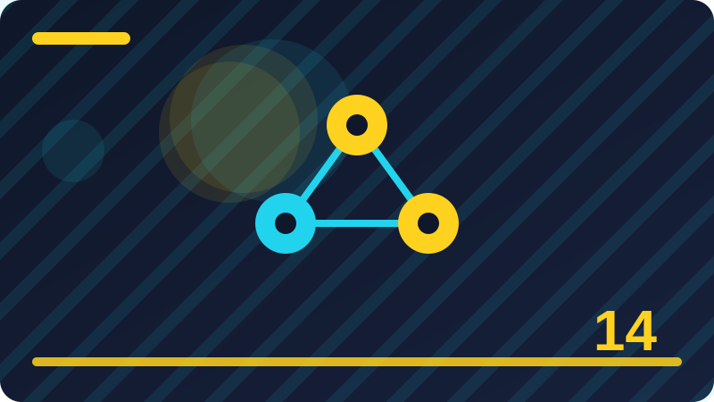

Chapter 14: Networks in Plain Words: Home and Office

Section 1: What a Network Really Is
A network is simply two or more devices connected so they can share things: files, a printer, an internet connection, or a game. That is the whole idea, and it is worth holding on to because network discussions quickly fill with jargon that makes a simple idea sound complicated. If your laptop and your phone both connect to the same Wi-Fi, they are on a network together. If your office has twenty computers that can all reach the same printer and the same internet connection, that is a network too, just a bigger one. The size changes, the devices change, but the core idea stays the same: connections that let devices share, communicate, and work together instead of each working alone.
Networks exist because sharing is more efficient than duplicating. Before networks, sharing a file meant copying it onto a disk and physically carrying it to another computer, and sharing an internet connection meant one computer at a time, or an expensive connection for each machine. A network removes that friction: files move in seconds, one internet connection serves a whole household, one printer serves a whole office, and a game can be played by people in different rooms or different countries. That convenience is why networks are everywhere now, from homes to schools to hospitals, and why understanding them, even at a basic level, is a practical life skill, not just a technical one. Every time you connect to Wi-Fi, you are using a network, whether you think about it or not.
A network has a few basic parts, which you will meet in detail later in this chapter. There is a central device, usually a router, that directs traffic between devices and to the internet, like a post office sorting mail to the right addresses. There are connections, wired through cables or wireless through Wi-Fi, that carry the traffic. There are addresses, called IP addresses, that identify each device, so traffic reaches the right destination instead of going everywhere at once. And there are rules, built into the devices and their software, that decide what is allowed and what is blocked. You do not need to master any of these parts today. You need a mental picture of a network as connected devices, sharing through a central hub, with addresses and rules, and that picture will make every later section easier to follow.
Networks also introduce shared risks, which is why this book includes a chapter on them in a security course. When devices are connected, a problem on one device can affect others: malware on one computer can try to spread to others on the same network, an intruder who reaches one device may try to reach the rest, and a weak password on one device can become a doorway into the whole network. That shared risk is manageable, and this chapter will teach you how, through strong router passwords, updates, guest networks, and sensible sharing rules. But it is important to understand from the start that a network is a shared space, like a house with many rooms: keeping your own room tidy matters, but so does locking the front door, because everyone inside shares the same entrance. Networks are about sharing, and sharing well means sharing safely.
network = {"devices": ["laptop", "phone", "printer"], "connection": "home Wi-Fi",
"shared": ["internet", "printer", "files"]}
print("Devices on network:", len(network["devices"]))Check: In your own words, what is a network, and why do people use one instead of keeping every device separate?
Section 2: Devices Talking to Each Other
Devices talk to each other on a network by sending small packages of data, following agreed rules about how those packages are addressed, sent, and understood. Those rules are called protocols, and you can think of them as the languages and manners of network conversation: they decide how a message starts, how the receiver knows it arrived complete, and what happens if part of it goes missing. You do not need to learn protocol names or details to use a network well, any more than you need to understand postal sorting to send a letter. But a basic picture helps: when your laptop asks a website for a page, it sends a request across the network, the request is routed to the right server, the server sends the page back in packages, and your laptop reassembles them into the page you see. That round trip happens in fractions of a second, thousands of times a day, without you noticing.
Each device on a network has an address, so messages reach the right destination. The main address is the IP address, covered in section five, working like a house address: it tells the network where to deliver packages. Devices also have a physical address, called a MAC address, built into their network hardware, which works like a nameplate on the device itself. The router uses both kinds of address to direct traffic: it learns which physical device has which IP address, and it forwards packages accordingly, so that a video meant for your tablet does not end up on your printer. That addressing is why devices can share a network without every device receiving everyone else's traffic: the router sorts delivery.
Devices also take turns and share capacity, because a connection, like a road, can only carry so much at once. When many devices stream video, download files, and play games simultaneously, they share the available capacity, and each gets a smaller share, which is why your video may buffer when someone else starts a large download. Networks handle sharing automatically, and for most homes it works well enough that you rarely notice it. When you do notice slowness, the cause is often sharing, not a fault, and section twenty-four will help you tell the difference. Understanding sharing also explains why a single device downloading huge files can affect everyone else, and why consideration, such as scheduling large downloads for quiet times, is good network manners as well as good sense.
Finally, devices talking to each other depends on trust and permission. A device does not automatically share its files with every other device on the network. Sharing must be switched on, for specific folders or services, and protected by passwords or permissions, as sections fifteen to seventeen will explain. That permission layer is what stops a network from being a free-for-all, where anyone connected can read everyone else's files. When you connect a new device, it can usually reach the internet and see that other devices exist, but it cannot read their files unless sharing has been allowed. That distinction, between being connected and being permitted, is central to network security, and it is one you will return to throughout this chapter. Connection is the road. Permission is the locked door at the end of it.
devices = {"laptop": "192.168.1.10", "phone": "192.168.1.11", "printer": "192.168.1.12"}
for device, address in devices.items():
print(device, "->", address)Check: Why do devices on a network need addresses, and what happens if two devices try to use the same one?
Section 3: Your Router: The Heart of Home Network
Your router is the most important device in your home network, and understanding it is the key to understanding and securing everything else. A router sits between your home devices and the internet, directing traffic in both directions: it sends your requests out to the internet, receives responses back, and delivers each response to the device that asked for it. Without a router, your devices could not share a single internet connection, because the internet provider gives your home one public address, and the router's job is to share that address among all your devices, keeping track of which device asked for what, so that replies reach the right place. You can simply think of the router as a receptionist for your home: it takes messages in and out, and makes sure each reaches the right person.
The router also creates your Wi-Fi network, broadcasting the network name you see when you look for Wi-Fi on your phone, and protecting it with a password. That Wi-Fi network is your home's wireless front door, and its password is one of the most important passwords in your digital life, because anyone with it can join your network, use your internet, and potentially try to reach your devices. The router also usually includes a firewall, which blocks unwanted incoming connections from the internet, as chapter sixteen will explain, and it keeps a list of connected devices, which lets you see who is on your network, as section twelve will show you. The router is not just a box with blinking lights. It is the gatekeeper, the post office, and the firewall for your whole home, in one device.
Because the router is so central, its security matters more than any single device's security. If an attacker gains control of your router, they can redirect your traffic, spy on unencrypted connections, change your network settings, and attack your devices from inside the network, where they are more trusted than an outsider would be. That is why sections ten and eleven focus on the router specifically: changing its default admin password, keeping its firmware updated, and checking its settings occasionally. Those two actions, a strong admin password and current firmware, prevent the most common router attacks, which exploit default passwords and known vulnerabilities that updates would have fixed. A router left with its factory password and years-old firmware is the weakest link in most home networks, however strong the passwords on individual devices may be.
You can start learning your router today, safely, by finding its admin page. The address is usually printed on a sticker on the router itself, along with the default Wi-Fi name and password, and you can reach it by typing that address into a browser on a device connected to your network. Look around, without changing anything yet, to see what settings exist: Wi-Fi name and password, connected devices, update status, and guest network options. That exploration, done calmly and without changing settings you do not understand, builds familiarity, and familiarity makes later changes, such as a password update, feel routine rather than frightening. Your router is the heart of your home network. Learn where it is, how to reach its settings, and how to keep it secure, and you have secured the centre from which everything else flows.
router_jobs = ["Share one internet connection", "Create your Wi-Fi network",
"Direct traffic to the right device", "Block unwanted incoming connections"]
for job in router_jobs:
print("-", job)Check: Why is your router's security more important than the security of any single device on your network?
Section 4: Modems, Routers and Switches Explained
Modems, routers, and switches are three different network devices that are often confused, partly because modern home equipment combines them into a single box, and partly because their names sound technical and similar. Understanding what each one does, even briefly, clears up much of the confusion around home networking, and helps you know what to look for when something goes wrong or when you need to buy or replace equipment. A modem connects your home to your internet provider's network. Its name comes from modulator-demodulator, describing how it converts signals between your home's wiring and the provider's network, whether that wiring is a phone line, a cable television line, or a fibre connection. Without a modem, your home has no internet connection at all, because there is no bridge between your home and the provider's wider network.
A router, as section three explained, connects your home devices together and shares the internet connection among them, directing traffic and protecting the network with a firewall. In many homes, the provider's box combines modem and router, which is why people use the words interchangeably, but the jobs are distinct. When troubleshooting, knowing which part fails matters: if the modem cannot connect to the provider, no device in your home will have internet, however well the router works. If the modem connects fine but the router is misconfigured, your devices may connect to Wi-Fi but still not reach the internet, or may not see each other. Section twenty-five will help you tell those cases apart.
A switch expands a wired network, giving you more ports for cables. Think of a switch as a power strip for network cables: if your router has only four wired ports and you have six devices to connect by cable, a switch adds more ports, and traffic flows through it to the router as needed. Switches do not create Wi-Fi, do not connect to the internet provider, and do not manage your network's security in the way a router does. They simply forward wired traffic efficiently to the right device, using the physical addresses from section two. In offices, switches are essential, connecting many wired computers, printers, and servers to the router and each other. In homes, switches are useful when you have many wired devices, such as a desktop computer, a game console, a television, and a network drive, all near one location.
You do not need separate devices for most homes. A combined modem-router from your provider, plus a switch only if you run out of wired ports, covers almost every home. What matters is knowing which job each part does, so that when you read advice or talk to your provider's support team, you understand what they mean. If support asks you to restart your modem, they mean the part connecting to the provider, which may share a box with your router, in which case restarting the box restarts both. If they ask about your switch, they mean the device expanding your wired ports, if you have one. Clear names for clear jobs make troubleshooting faster, buying decisions wiser, and conversations with support far less confusing, which is why this brief tour of three devices is worth the time, even though your home may contain only one box doing all three jobs at once.
network_devices = {"modem": "connects home to internet provider",
"router": "shares connection and directs home traffic",
"switch": "adds more wired ports"}
for device, job in network_devices.items():
print(device, "->", job)Check: In a combined modem-router box, which job connects to your internet provider, and which job shares the connection at home?
Section 5: IP Addresses in Plain Words
An IP address is a number that identifies a device on a network, so that data sent to that device reaches it and not another device. IP stands for Internet Protocol, which is the set of rules for addressing and routing data, but you can simply think of an IP address as a device's postal address on its network. When your laptop asks a website for a page, it includes its own address so the reply can find its way back, and it uses the website's address to send the request to the right server. Without addresses, the network would have no way to know where anything should go, and every message would have to go everywhere, which would be chaotic and insecure. Addresses make directed, private communication possible, which is the foundation of everything networks do.
There are two kinds of IP address you will encounter at home, and the distinction matters for understanding your network. Your public IP address is the address your internet provider gives to your home, and it is the address the wider internet sees when your devices go online. All your home devices share that one public address, thanks to your router, which is why websites see your household as one address even though many devices are behind it. Your private IP addresses are the addresses your router gives to each device inside your home, usually numbers starting with 192.168, and those addresses are only meaningful inside your home network. A device's private address lets the router deliver traffic to it correctly, but that address is not reachable directly from the internet, which is part of why a router's firewall protection matters: it hides your private addresses behind your public one, and only lets in traffic that is a reply to something you requested, or that you have explicitly allowed.
IP addresses are assigned statically, meaning fixed and set manually, or dynamically, meaning assigned automatically by your router through a service called DHCP. Most home devices use dynamic addresses, which is convenient, because you do not have to configure anything, and the router manages the pool of available addresses, reusing them as devices come and go. That is why your phone's IP address may change from day to day, and why that change is normal, not a problem. Static addresses are used for devices needing a fixed address, such as a printer, and setting one is an advanced step beginners need not master now. What matters is that addresses are managed, usually automatically, and that each device has a unique address on its network at any given time.
Two devices with the same address cause a conflict, and neither works reliably, because the router cannot tell which should receive traffic for that number. Conflicts are rare, because DHCP prevents them, but restarting the affected device usually fixes one, since it then requests a fresh address. Understanding IP addresses at this level, as postal addresses for devices, with public and private kinds, assigned automatically in most homes, gives you the mental model you need for the rest of this chapter, including how to see who is on your network, how to set up sharing, and how to understand what your network can and cannot hide about you.
addresses = {"public": "one address for your whole home, seen by the internet",
"private": "one per device inside your home, e.g. 192.168.1.10"}
for kind, meaning in addresses.items():
print(kind, "->", meaning)Check: What is the difference between your home's public IP address and a device's private IP address?
Section 6: Your Home Network Map
A home network map is a simple diagram or list showing what devices are on your network, how they connect, and what they share, and making one is one of the most useful exercises in this chapter, because it turns an invisible network into something you can see, understand, and secure. Most people have no idea how many devices are on their home network: phones, laptops, tablets, televisions, game consoles, smart speakers, cameras, printers, and more, each with its own connection and its own security state. A map makes that invisible crowd visible, and visibility is the first step to control. You cannot secure a device you do not know exists, you cannot notice an intruder if you do not know what normal looks like, and you cannot troubleshoot a problem if you do not know how devices connect. A map solves all three, with an hour of work and a piece of paper.
To make your map, start at the centre: your router, and the internet connection coming into it. Draw the router in the middle, with a line to the internet on one side. Then add each device, with a line showing whether it connects by Wi-Fi or by cable, and a note of what it is and who uses it. Your router's admin page, which section three introduced, usually shows a list of connected devices, which is an excellent starting point, because it lists devices you may have forgotten, such as an old phone still connected, a smart television you rarely use, or a guest's device that never disconnected. Go through that list, identify each device, and add it to your map. If you find a device you cannot identify, do not panic, but do investigate: check whether it belongs to a family member, a visitor, or a smart device you forgot, and if you truly cannot identify it, section twelve will show you how to handle unknown devices safely.
Also add sharing information: which devices share files, which share a printer, and which are smart devices with their own accounts? Those notes turn a simple device list into a security map, showing where your network's sensitive points are: a shared folder with family photos, a printer accessible to everyone, a camera that can be viewed from the internet. That security view helps you decide, for example, whether a smart camera belongs on your main network or a guest network, as section thirty-two will discuss. A map without sharing notes is a list. A map with sharing notes is a security tool.
Keep your map somewhere safe, update it when you add or remove a device, and review it every few months, alongside your backup and antivirus checks. A map that is updated stays useful. A map that is drawn once and forgotten becomes a historical document, interesting but not protective. When you help someone else with their network, as section forty-one will discuss, making a map together is an excellent first step, because it gives both of you a shared picture to work from, instead of guessing about invisible connections. Your home network map is a modest document with an outsized benefit: it makes the invisible visible, the unknown known, and the unmanageable manageable, which is the foundation of every other security step in this chapter.
home_map = {"router": ["laptop (Wi-Fi)", "phone (Wi-Fi)", "printer (cable)",
"television (Wi-Fi)", "smart speaker (Wi-Fi)"]}
for device in home_map["router"]:
print("Connected:", device)Check: Why is a device you do not know about on your network a security problem, even if it seems harmless?
Section 7: Wired vs Wireless Connections
Wired and wireless connections are the two ways devices join a network, and each has strengths and weaknesses that make it better for different situations. A wired connection uses a cable, usually an Ethernet cable, plugged into a port on the device and into the router or a switch. A wireless connection uses Wi-Fi, radio signals between the device and the router's wireless access point, without a cable. Both carry the same kind of data, and both can be fast, but they differ in speed, reliability, security, and convenience, and understanding those differences helps you choose wisely for each device, rather than defaulting to Wi-Fi for everything simply because it is cable-free.
Wired connections are generally faster, more reliable, and more secure than wireless ones. A cable provides a dedicated, interference-free path, so speeds are consistent and rarely affected by walls, neighbours' networks, or microwave ovens, all of which can interfere with Wi-Fi. Wired connections are also harder for an outsider to intercept, because an attacker would need physical access to the cable or the network to tap into it, whereas Wi-Fi signals travel through walls and can be received by anyone nearby with the right equipment, which is why Wi-Fi passwords and encryption matter so much, as chapter fifteen will explain. For devices that stay in one place and need speed and reliability, such as a desktop computer, a game console, a television used for streaming, or a network drive, a wired connection is usually the better choice, if a cable can practically reach them.
Wireless connections win on convenience and mobility. A phone, a tablet, or a laptop you carry around the house cannot be tethered by a cable, and Wi-Fi lets those devices connect from any room, and lets visitors connect without finding a cable and a port. That convenience comes with trade-offs: Wi-Fi speeds vary with distance, obstacles like thick walls, and interference from neighbouring networks. Wi-Fi also requires careful security, because its signals leave your home, so a strong Wi-Fi password and modern encryption, covered in chapter fifteen, are essential, whereas a wired network's physical boundary provides a natural layer of protection that Wi-Fi lacks. A wireless network without a password is an open invitation to anyone nearby, which is why the first rule of Wi-Fi security is simply to have a strong password and to keep it private.
In practice, most homes use a mix: wired for stationary, demanding devices, wireless for mobile and convenient ones. That mix gives you the best of both, and it is easy to arrange: plug in what can be plugged in, and let the rest use Wi-Fi. When troubleshooting slowness, consider the connection type: a device on weak Wi-Fi far from the router will naturally be slower than a wired device next to it, and moving closer, or switching to a cable, may solve the problem without any other change. Wired versus wireless is not a contest with a single winner. It is a choice per device, based on whether that device needs speed, reliability, and physical security, or mobility and convenience, and making that choice deliberately, device by device, is a simple way to make your whole network faster and safer at the same time.
connection_choice = {"desktop computer": "wired", "game console": "wired",
"phone": "wireless", "tablet": "wireless", "television": "wired if possible"}
for device, choice in connection_choice.items():
print(device, "->", choice)Check: Why is a wired connection generally more secure than an unprotected wireless one, and what makes wireless convenient despite that?
Section 8: Ethernet Cables and Why They Still Matter
Ethernet cables, the thick, telephone-like cables that plug computers into routers and switches, may seem old-fashioned in a world of Wi-Fi, but they still matter enormously, because they provide the fastest, most reliable, and most secure connections available in a home or office, and because much of the internet itself, behind the Wi-Fi in your home, runs on cables. An Ethernet cable carries data as electrical signals along wires inside it, shielded from much of the interference that affects wireless signals, which is why a wired connection can consistently deliver high speeds even when Wi-Fi struggles with walls, distance, or neighbouring networks. For tasks that need steady speed, such as video calls, online gaming, large downloads, or streaming high-quality video to a television, a cable often makes the difference between smooth performance and frustrating buffering, and that difference alone is reason enough to consider cables for stationary devices.
Cables also matter for security, for the reason given in the previous section: a cable connection requires physical access. An attacker outside your home cannot intercept a wired connection without getting inside and plugging into your network, whereas Wi-Fi signals can be picked up from outside your walls. That physical boundary does not make wired networks invulnerable, because an intruder inside your home could still plug in, but it does remove the easiest remote interception route that wireless networks face. In offices, where sensitive data travels between computers and servers, wired connections are the norm for desktops and servers precisely because of that combination of speed, reliability, and physical security, and in homes, the same logic applies to any device that holds sensitive data or needs reliable performance.
Using Ethernet cables is simple, and you do not need to wire your whole house to benefit. Most routers have several Ethernet ports on the back, and a single cable from the router to a nearby device, such as a desktop computer or a television in the same room, immediately gives that device a wired connection. For devices in other rooms, you can run a cable along walls, use a longer cable, or use a switch to extend wired access to a room with several devices, as section four explained. Cable categories, such as Cat5e and Cat6, indicate speed capabilities, and for most homes Cat5e or Cat6 is more than sufficient. A basic, well-made cable, plugged in correctly, is enough.
Finally, cables matter for troubleshooting, because they provide a known-good baseline. When Wi-Fi is slow or unreliable, plugging a device in by cable and testing again tells you immediately whether the problem is with Wi-Fi specifically or with your internet connection generally. If the wired test is fast and the wireless test is slow, the problem is Wi-Fi, and you can focus on router placement, interference, or Wi-Fi settings. If both are slow, the problem is more likely your internet connection or your provider, and section forty-four will help you decide when to contact them. That diagnostic value, combined with speed, reliability, and security, is why Ethernet cables, despite their unfashionable appearance, remain a fundamental part of good networking. Keep a spare cable handy, use cables where you can, and let Wi-Fi handle the devices that truly need to move.
cable_benefits = ["Faster and more consistent speeds", "Less interference",
"Harder to intercept from outside", "Useful for troubleshooting Wi-Fi"]
for benefit in cable_benefits:
print("-", benefit)Check: How can a single Ethernet cable help you diagnose whether a network problem is caused by Wi-Fi or by your internet connection?
Section 9: Setting Up a Home Network Safely
Setting up a home network safely is a sequence of small steps, each simple on its own, that together create a network that is convenient for your household and difficult for outsiders to abuse. The sequence begins before you connect anything: choose a strong Wi-Fi password, different from your other passwords, and a strong admin password for your router, different from the Wi-Fi password. Write both down somewhere safe, such as a password manager or a sealed note, because you will need them when adding devices and when changing settings, and because a password you cannot find is a password you will be tempted to simplify or share insecurely. That preparation, done before setup, prevents the most common setup mistake, which is leaving default passwords in place because changing them feels like extra work in the middle of an exciting new installation.
Next, connect your modem and router, following the provider's instructions, and wait for the internet connection to establish, which may take a few minutes. Then sign in to the router's admin page, using the address and default credentials printed on the router, and change the admin password immediately, before doing anything else, because the default admin password is publicly known for many router models, and anyone who reaches your admin page with that password controls your network. After changing the admin password, set your Wi-Fi network name and password, choosing a name that does not identify you personally, such as your address or family name, and a password that is long and unique. Check that Wi-Fi encryption is set to the modern standard, WPA2 or WPA3, which chapter fifteen will explain, and switch on automatic firmware updates if your router offers them, so that security fixes arrive without you remembering them.
Then add your devices one by one, starting with your own, and check the connected devices list after each addition, to confirm that only devices you recognise are present. Set up a guest network for visitors, as section thirteen will explain, so that guests can use your internet without reaching your personal devices and files. Switch off features you do not need, such as remote admin access from the internet, unless you have a specific reason to use it and understand its risks, because every feature left on is a potential doorway, and a home network rarely needs remote admin access. Finally, make your network map from section six, listing each device and its connection, and store it with your password note, so that future changes and troubleshooting start from a known, documented state rather than from guesswork.
Test your setup before declaring it finished. Connect a phone and a laptop, browse a few sites, and confirm everything you need works. Check that a guest device cannot see your personal devices' shared files. If something does not work, troubleshoot one change at a time, so you know which change fixed it. A home network set up safely, in this order, with strong passwords, current firmware, a guest network, unnecessary features off, and a map for reference, is a network you can trust and enjoy, and it is a network that will serve your household well for years, with only occasional maintenance, which later sections will cover.
setup_order = ["Choose strong passwords", "Change router admin password",
"Set Wi-Fi name, password, encryption", "Switch on automatic updates",
"Add devices one by one", "Set up guest network", "Make a network map"]
for i, step in enumerate(setup_order, 1):
print(i, step)Check: Why should changing the router's admin password be the first step after signing in, before anything else?
Section 10: Changing Default Router Passwords
Default passwords are the single weakest point in most home networks, and changing them is the single highest-value security action in this chapter, because default passwords are not secret at all. Router makers ship every unit of a model with the same admin username and password, printed in the manual and on the router, and those defaults are widely published on the internet, in manuals, forums, and databases that anyone can search. An attacker who can reach your router's admin page, whether from inside your network or, if remote access is enabled, from the internet, and who knows the default password for your model, can sign in as the administrator, change your settings, redirect your traffic, and lock you out of your own network. That attack requires no skill beyond looking up a password and trying it, which is why default passwords are the first thing attackers try, and the first thing you must change.
There are two passwords to change, and confusing them is common. The Wi-Fi password lets devices join your wireless network. The admin password lets you sign in to the router's settings page and change its configuration. Both matter, but the admin password matters more for control, because whoever holds it controls the network itself, including the Wi-Fi password, which they can read or change. Change the admin password first, as section nine advised, to a strong, unique password that you do not use elsewhere, and store it safely in a password manager or a sealed note, because losing the admin password can lock you out of your own router's settings, requiring a factory reset to regain access, which erases your configuration and forces you to set up again.
Changing the password is straightforward, though steps vary by model. Sign in to the admin page using the address on the router's sticker, find the administration or system settings section, and look for the password change option. Enter the current default password, then your new password twice, and save. Sign out, then sign back in with the new password to confirm it works, before you forget it or lose the note. If you cannot find the password setting, consult your router's manual or the maker's support pages for your model, and do not change other settings while there, because an accidental change can disconnect your devices. Change one thing, confirm it, and move on.
Also change the default Wi-Fi password if your router shipped with one, even if it looks random, because a password printed on a sticker can be read by anyone who sees the router, such as a visitor or a previous occupant, and because some defaults follow predictable patterns. Choose a new Wi-Fi password that is long, memorable to your household, and different from the admin password, and update all your devices to use it, which is a good opportunity to check the connected devices list and remove any you do not recognise. Changing default passwords takes minutes, costs nothing, and closes the easiest attack route into your network. It is the first thing to do on any new router, the first thing to check on a router you have owned for years, and the habit to repeat whenever you reset a router or move house. Defaults are public. Your passwords should not be.
passwords_to_change = ["Router admin password (controls settings)",
"Wi-Fi password (joins wireless network)"]
for item in passwords_to_change:
print("Change:", item)Check: Why are default router passwords not secret, even though they look like random strings on a sticker?
Section 11: Updating Router Firmware
Router firmware is the low-level software that runs your router, controlling how it directs traffic, manages Wi-Fi, enforces its firewall, and presents its settings page, and keeping it updated is as important for your router as keeping your computer's operating system updated is for your computer. Firmware updates fix vulnerabilities that attackers can exploit to take over routers, improve performance and stability, add features, and sometimes improve Wi-Fi range or speed. Because the router is the gatekeeper for your whole home network, as section three explained, a vulnerability in its firmware is a vulnerability in every device behind it, which is why router updates deserve the same prompt attention as computer updates, even though routers are easier to forget, sitting quietly in a corner with blinking lights that rarely demand your attention.
Many modern routers update automatically if that setting is on, and switching it on is best for most households, because it ensures security fixes arrive promptly. Check your router's admin page for an update or firmware section, and look for an automatic update option. If it exists, switch it on, and confirm that the router's current firmware version and date are shown, so you can tell whether updates are actually happening. If your router does not offer automatic updates, check for updates manually every few months, perhaps alongside your other monthly security checks, by visiting the firmware section and choosing check for updates, or by visiting the maker's support site for your model and comparing the latest version with your router's current version. That manual check takes minutes, and it catches the security fixes that would otherwise sit uninstalled for years.
When updating manually, follow a few precautions to avoid turning a routine update into a problem. Do not switch the router off or unplug it during an update, because interrupting firmware installation can corrupt the router's software and leave it unusable, requiring professional recovery or replacement. Update from a device connected by cable if possible, rather than over Wi-Fi, because a Wi-Fi interruption during the update is another way to corrupt it. Note your important settings, such as Wi-Fi name and password, before updating, in case the update resets them, although most updates preserve settings, and be prepared for the router to restart and your internet to be briefly unavailable during the process. Those precautions sound cautious, but they are simple, and they prevent the rare but serious outcome of a bricked router, which is a router whose software is so damaged it no longer functions.
If your router is so old its maker no longer provides updates, take that seriously, as with unsupported operating systems. An unpatched router is a permanent collection of known vulnerabilities guarding your whole network. Consider replacing it with a current model from a maker with a good update record, or ask your internet provider whether they offer a newer router, because providers often replace outdated equipment on request. A router update is a small, infrequent task with a large security benefit, and it is one of the easiest ways to protect your entire home at once. Switch on automatic updates, check manually if needed, update carefully, and replace routers that can no longer be updated. Your network's gatekeeper deserves to be current, because every device behind it depends on it.
firmware_routine = ["Switch on automatic updates if offered",
"Otherwise check manually every few months",
"Never switch off during an update",
"Replace routers that no longer receive updates"]
for step in firmware_routine:
print("-", step)Check: Why should you never switch a router off while its firmware is updating?
Section 12: Who Is on Your Network?
Knowing who is on your network is fundamental, because an unknown device may be a forgotten visitor's phone, an unnoticed smart device, or an intruder who obtained your Wi-Fi password and is probing your devices. Checking regularly, perhaps monthly, turns that unknown into known, and gives you a chance to act before an intruder causes harm, rather than discovering them months later after damage has been done. Your router's admin page is the tool for this check: it usually has a connected devices, attached devices, or client list section, showing each device's name, its private IP address, and sometimes its physical MAC address and connection type. That list is your network's guest book, and reading it occasionally is a simple, powerful habit.
When you first check the list, you may be surprised by how many devices appear, and how cryptic their names are: a phone as a model name, a television as a brand, a smart speaker as letters and numbers, a computer as a hostname you set years ago and forgot. Go through the list slowly, comparing it with your network map from section six, and identify each device. For devices you cannot identify by name, check their connection time, type, and manufacturer if shown, which is often inferred from the MAC address and can hint at whether it is a phone, television, or camera. Ask family members whether a mystery device might be theirs, such as an old tablet, a child's device, or a visitor's phone that connected once and stayed in the list. Most mysteries resolve into forgotten but legitimate devices, and resolving them calmly is part of the habit.
If you find a device nobody claims, treat it as suspicious but do not panic. Change your Wi-Fi password, which disconnects all devices including the intruder, then reconnect only devices you recognise, one by one. That action is simple and effective, because it revokes the intruder's access without requiring you to identify exactly how they got in, although you should also check whether your Wi-Fi password was shared carelessly, written somewhere visible, or set to a weak value that could have been guessed. Also check your router's admin password and firmware, as sections ten and eleven advised, because an intruder may have arrived through a weak router setting rather than a weak Wi-Fi password. If the unknown device reappears after a password change, or if you notice other signs of intrusion, such as changed settings or unusual traffic, get professional help, because the intruder may have a deeper foothold than a Wi-Fi password alone explains.
Make checking your network routine, not a one-time investigation. Glance at the connected devices list monthly, update your map when devices change, and ask family members to tell you when they connect a new device, so new entries are expected rather than alarming. A network whose occupants you know is a network you control, and control is the essence of security. An unknown device is not proof of an attack, but it is a question that deserves an answer, and answering it promptly, by identifying it or by changing your password and reconnecting only known devices, keeps your network's guest book accurate and your home's digital front door guarded.
unknown_device_steps = ["Identify it with household members",
"Change Wi-Fi password if truly unknown",
"Reconnect only recognised devices one by one",
"Check router admin password and firmware"]
for i, step in enumerate(unknown_device_steps, 1):
print(i, step)Check: What should you do first if you find a device on your network that nobody in your household recognises?
Section 13: Guest Networks for Visitors
A guest network is a separate Wi-Fi network, created by your router, for visitors to use, isolated from your main network so that guests can reach the internet but cannot reach your personal devices, files, and printers. That isolation is its entire point, and it is one of the simplest, most effective security features a home router offers. When a friend visits and asks for Wi-Fi, giving them your main Wi-Fi password gives their device access to your network, where it could, intentionally or through malware already on it, probe your computers, access shared files, or reach smart devices. Giving them the guest network password instead gives them internet access, which is what they actually want, without giving them access to your private network, which they do not need. It is the digital equivalent of letting a visitor use your living room Wi-Fi while keeping your bedroom doors locked: hospitable, but with sensible boundaries.
Setting up a guest network is usually straightforward, though steps vary by router. In your router's admin page, look for a guest network section, switch it on, give it a clear name, such as YourHouse-Guest, and set a password different from your main Wi-Fi password. Some routers let you set guest limits, such as how long it stays on or how much bandwidth guests can use, worth using if offered, because they reduce the risk of one guest's infected device affecting another's. Once set up, test it: connect a phone to the guest network, confirm it can browse the internet, and confirm it cannot see your main network's shared files or printer, which proves the isolation is working. That test takes minutes and proves the boundary is real, not just a second name for the same network.
Guest networks are also useful beyond visitors. They suit smart home devices, as section thirty-two will discuss, because isolating them from your main network limits damage if one is compromised. They are useful for children's friends, for repair people who need internet briefly, and for any device you do not fully trust, because the guest network's isolation applies to any device on it, not just to human guests. You can also change the guest password regularly, or after a large gathering, without disrupting your own devices, because your main network's password stays unchanged. That convenience is a practical benefit: rotating a guest password is painless, while rotating a main password requires updating every device in your home, which is why people avoid doing it even when they should.
Make guest network use a household habit. Tell family members visitors use the guest network, not the main one, and share the guest password verbally when asked, rather than sharing the main password out of politeness. Politeness does not require giving away network access, and most visitors understand and appreciate a guest network, because it is a normal, professional practice in hotels, offices, and cafes, not a sign of distrust. A guest network is hospitality with boundaries: internet for guests, privacy for your household, and isolation that protects both sides if a guest's device happens to be infected. Switch it on, test it, use it for every visitor, and your main network stays private, even while your home stays welcoming.
guest_network = {"name": "YourHouse-Guest", "password": "different from main Wi-Fi",
"access": "internet only, no personal devices or files"}
for key, value in guest_network.items():
print(key, "->", value)Check: Why should a visitor use your guest network instead of your main Wi-Fi network, even if you trust them?
Section 14: Network Names and Why They Matter
Your Wi-Fi network name, called an SSID, is the name you see when you look for Wi-Fi networks on a phone or laptop, and choosing it thoughtfully matters more than many people realise, because it is broadcast to everyone nearby and it reveals information about your household and your equipment. A network name that includes your family name, your address, your flat number, or a child's name tells strangers who lives there and where, which is information you would not post on your front door, and should not broadcast over radio waves to your whole street. A network name that includes your router's brand and model tells attackers exactly what equipment you use, which helps them look up its default passwords and known vulnerabilities. A network name that is simply the default provided by your provider or router maker is also informative, because defaults reveal the provider and often the model, and because a default name suggests the owner may not have changed other defaults either, such as passwords, which makes the network a more attractive target.
Choosing a good network name is simple. Pick something neutral, memorable, and revealing nothing personal or technical, such as a favourite place or a made-up word, and avoid names that invite attention, because a provocative name attracts curiosity and unwanted attempts to connect. Do not include your address, your name, your router brand, or your internet provider in the name. If you have multiple networks, name them clearly but neutrally, for example RiverHouse and RiverHouse-Guest, so members and visitors can tell them apart without revealing anything sensitive. A neutral name does not make your network invisible or unhackable, but it removes free information that attackers would otherwise use to target you, and good security is partly about not giving away information unnecessarily.
Some guides suggest hiding your network name entirely, by switching off SSID broadcast, so it does not appear in Wi-Fi lists and can only be joined by typing its name manually. Hiding sounds secure, but provides little real protection, because scanning tools still detect hidden networks easily, and hiding inconveniences your own devices, which must be configured manually. Security professionals advise against relying on hiding, because it is obscurity, not security, giving false safety while adding hassle. A strong Wi-Fi password and modern encryption, covered in chapter fifteen, protect your network far more effectively than hiding its name. Do not hide your network as a substitute for a password. Use a neutral name, a strong password, and modern encryption, and let visibility be a convenience, not a vulnerability.
Finally, your network name is also a social signal. Neighbours and visitors see it in their Wi-Fi lists whenever nearby. A friendly, neutral name is good manners as well as good security, while a name mocking neighbours or advertising personal details creates unnecessary friction or risk. Choose a name you would be comfortable seeing on a list shown to strangers, because that is exactly what happens every day. Network names matter because they are public, they are informative, and they are easy to choose well. Take a minute to choose a neutral name, avoid personal and technical details, and do not rely on hiding. That minute is a small, lasting improvement to your network's privacy and security.
good_name_rules = ["Neutral and memorable", "No family name or address",
"No router brand or model", "Guest network clearly named"]
for rule in good_name_rules:
print("-", rule)Check: Why is hiding your Wi-Fi network name not a good substitute for a strong password?
Section 15: Sharing Files Safely at Home
Sharing files at home is a main reason to have a network, but it must be done carefully, because overly broad sharing turns private files into files anyone on the network can read, including visitors, compromised devices, and intruders if the network is ever breached. The principle mirrors least privilege from chapter twelve: share only what needs sharing, with only the people and devices needing it, protected with passwords or permissions where possible. A shared folder containing your whole documents library, open to everyone on the network without a password, is convenient, but it is also a single mistake away from exposing years of personal files to anyone who joins your network, legitimately or not. A shared folder containing only the photos you want family members to see, protected appropriately, is sharing done well.
Start by reviewing what you currently share, because many computers share more than owners realise. Operating systems sometimes enable sharing by default, or a program may have created a shared folder during installation, and those shares can sit unnoticed for years. On each computer, check its sharing settings, list what folders are shared, who can access them, and whether access requires a password, and switch off sharing for anything you do not deliberately want to share. That audit takes minutes per computer, and it often reveals surprises, such as a shared downloads folder, a shared media library, or a printer shared without restriction. Switch off what you do not need, and for what you do need, narrow it: share a specific folder, not a whole drive, and require authentication, so that only users with an account and password can access it, rather than anyone on the network.
When you do share, use your operating system's built-in sharing features, which include permission controls, rather than informal methods such as leaving files in an open folder. Set permissions so family members who need to read files can read them, but cannot delete or modify them unless they genuinely need to, because a shared folder everyone can delete from is one accidental click from empty. For sensitive files, such as financial records, do not share them over the network at all unless you have a specific reason, and if you must, use encrypted transfer or a password-protected archive, removing the share as soon as the transfer is complete. Sharing should be temporary when possible, and permanent only when there is an ongoing need, because a permanent share is a permanent doorway, and doorways should exist only where they are needed.
Finally, guest devices should never access your shared files, which is why guest networks, from section thirteen, matter: a guest on your guest network cannot reach your main network's shares, even if broadly configured, because the networks are isolated. That isolation is a safety net under your sharing settings, catching mistakes in configuration before they expose files to visitors. Review your shares regularly, perhaps quarterly, alongside your other security checks, asking whether each share is still needed, correctly permissioned, and limited to the right people. Sharing files safely at home is not about refusing to share. It is about sharing deliberately, narrowly, and temporarily where possible, so that the convenience of a network does not become an open door to your private life.
sharing_rules = ["Share specific folders, not whole drives", "Require a password",
"Read-only unless editing is truly needed", "Guests use the guest network",
"Review shares quarterly"]
for rule in sharing_rules:
print("-", rule)Check: Why is sharing a whole drive more dangerous than sharing one specific folder?
Section 16: Sharing a Printer Safely
Sharing a printer over a network is convenient: one printer serves every computer, phone, and tablet in a home or office, without cables running everywhere or files being carried on drives to a single connected computer. That convenience, however, introduces a network device that many people forget to secure, because a printer feels like a peripheral, not a computer, even though modern printers are computers in their own right, with network connections, storage, processors, and sometimes hard drives that retain copies of printed documents. A shared printer that is open to everyone on the network, or worse, accessible from the internet, can be abused: strangers can print unwanted pages, wasting paper and ink, attackers can read stored documents or use the printer as a foothold into the network, and sensitive documents can be printed by the wrong person or left sitting in the output tray. Sharing a printer safely means treating it as a network device that deserves the same basic care as any other.
First, share the printer only on your main network, never on a guest network, and never directly to the internet, unless you have a specific, understood reason and have secured it appropriately. Most home printers should be visible only to devices on your home network, and your router's firewall should block direct internet access, which is the default, but worth confirming if you enabled port forwarding, which chapter sixteen will explain. Check your printer's settings for any internet-facing features, such as cloud printing or remote printing services, and switch them on only if you actually use them, with a strong account password and multi-factor authentication where offered, because a cloud printing service linked to a weak account is a doorway to your printer from anywhere in the world.
Second, protect the printer itself. Change its default admin password, just as you changed your router's, because printers ship with publicly known default credentials, and an attacker reaching its settings page with them can change its configuration, read stored jobs, or use it to attack other devices. Keep its firmware updated, because printer vulnerabilities are real and occasionally exploited. If your printer has storage, check whether it stores copies of printed documents and whether those can be erased, especially before selling or disposing of it, because its storage can hold sensitive documents long after printing. That disposal caution mirrors the drive-wiping advice from chapter eleven, applied to a device many people forget contains storage at all.
Finally, practise sensible printing habits. Do not print highly sensitive documents to a shared printer in a busy household or office and leave them sitting in the tray, because anyone passing by can read them. Use secure printing features if offered, such as holding a job until you enter a code at the printer, so sensitive documents only print when you are standing there to collect them. Review who can use the printer occasionally, removing access for devices or users who no longer need it, especially where staff change over time. A shared printer, secured with a changed password, updated firmware, sensible network placement, and thoughtful printing habits, is a convenient, safe part of your network. A shared printer, left with defaults and forgotten, is a network device with a paper trail, in both senses, that deserves better.
printer_safety = ["Share only on main network, not guest or internet",
"Change default admin password", "Keep firmware updated",
"Use secure print codes for sensitive documents"]
for item in printer_safety:
print("-", item)Check: Why should a printer be treated as a network computer that needs securing, not just as a peripheral?
Section 17: Network Drives and Shared Storage
A network drive, sometimes called network attached storage or NAS, is storage connected to your network, so all devices can store and retrieve files from it without it being attached to any single computer. Think of it as a shared filing cabinet: instead of files living only on one laptop, they live on the drive, and any authorised device can open or save files there. That centralisation is powerful for backups, for sharing large files, and for households where several people need the same documents, but it also concentrates risk: a drive holding everyone's files is a valuable target, and if poorly secured, one breach exposes everything on it at once. Understanding that concentration is the key to using network drives safely.
The most important security step for a network drive is the same as for a router: change its default admin password immediately, and use strong, unique passwords for each user account, with permissions limiting each user to folders they genuinely need. A drive with a single shared account, no password, or the factory default, open to everyone on the network, is an open filing cabinet anyone joining your network can read, modify, or delete. Set up individual accounts, giving each person access only to their own folder plus genuinely shared folders, and make shared folders read-only for users who only need to read, as section fifteen advised. Those permissions take time to set up, but they are the difference between a shared cabinet with locks and an open shelf.
Second, keep the drive's software updated, and place it correctly on your network. Like routers and printers, network drives run firmware that needs updates to fix vulnerabilities, and reputable makers provide those updates regularly. Switch on automatic updates if offered, and check manually otherwise. Place the drive on your main network, not a guest network, and do not expose it directly to the internet unless you have a specific, secured remote access setup, as section thirty-four will discuss, because an internet-facing drive with a weak password is among the most commonly breached home devices. If you need remote access, use your router's or drive's secure remote access feature with strong authentication, or a virtual private network, rather than opening the drive's ports directly to the internet, which chapter sixteen will explain is risky.
Finally, a network drive is not a backup by itself, even though it feels like one, because it is a single device whose files can fail, be encrypted by ransomware, or be deleted by mistake, just like any other drive. Used as your only copy, it is a single failure point. Use it as part of a backup plan, following chapter eleven: keep copies on the network drive, plus a copy on an external drive or in the cloud, so failure or attack on the drive does not destroy your only copies. Back up the drive itself, if it holds unique files, because its failure would otherwise lose files found nowhere else. A network drive, secured with strong accounts and permissions, updated, placed correctly, and backed up as part of a wider plan, is a powerful shared resource. Left with defaults, exposed, and unbacked up, it is a concentrated risk disguised as convenience, and this section helps you tell the difference and choose the safe version.
nas_safety = ["Change default admin password", "Individual accounts with limited permissions",
"Keep software updated", "Do not expose directly to the internet",
"Back up the drive itself"]
for item in nas_safety:
print("-", item)Check: Why is a network drive not a backup by itself, even though it stores files centrally?
Section 18: Office Networks in Plain Words
Office networks are larger, more structured versions of home networks, serving many users, devices, and shared resources like servers and printers, under rules set by an IT team. The basic parts are the same, routers, switches, cables, Wi-Fi, and addresses, but the scale differs: where a home network might have ten devices and one router, an office might have hundreds of devices, multiple switches, servers, and a dedicated connection with a professionally managed firewall. That scale requires planning: addresses managed systematically, cables organised, Wi-Fi covering a large area without gaps, and departments on separate segments, so that, for example, finance computers are isolated from guest Wi-Fi, limiting damage if one segment is compromised.
For an ordinary office user, the main difference from a home network is that you do not manage it, and should not try to. Your IT team sets the rules, manages equipment, updates firmware, monitors for intrusions, and handles problems, and your role is to follow those rules, use the network as intended, and report problems promptly, rather than changing settings, plugging in unauthorised devices, or bypassing controls. Plugging a personal router or switch into an office network, for example, can disrupt addressing, create a security hole, and cause problems far beyond your desk, which is why IT teams prohibit it, even when it feels inconvenient. Similarly, connecting personal devices to the office network without permission, or using office Wi-Fi for personal downloads that violate policy, can introduce malware or consume capacity needed for work, and can violate rules that protect the organisation's data.
Office networks also have features home networks rarely need, such as central user accounts working on any office computer, shared drives managed by the organisation, and virtual private networks for remote work, covered in chapter twenty-one. Those features are managed centrally, so your files and settings may follow you between computers, and access may be revoked when you leave, which is normal for organisational data. It also means your activity on an office network may be monitored for security purposes, within organisational policies and applicable laws, so assume work devices and networks are not private as your home network is. That assumption is not about distrust. It is about understanding that an office network belongs to the organisation, serves its purposes, and is managed for its security, and using it accordingly, keeping personal activities on personal devices and networks where possible, is both professional and protective of your own privacy.
If you work in a small office without a dedicated IT team, the network may resemble a large home network, with one person, perhaps you, as informal keeper. In that case, this chapter's home lessons apply directly, plus: document the setup, as section forty-five advises, keep a network map, enforce strong passwords and updates, use a guest network for visitors, and consider professional help for setup and incident planning, because customer data and livelihoods justify expert input even for a small organisation. Whether managed by a large IT team or a single keeper, the principles are the same: central management, clear rules, segmentation where appropriate, and users who follow rules and report problems early. Offices are networks with many people depending on them, and that shared dependence is why office network rules deserve respect, even when they feel restrictive.
office_network = {"managed_by": "IT team", "users": "many staff",
"rule": "follow policy, do not add unauthorised devices",
"action_if_problem": "report to IT promptly"}
for key, value in office_network.items():
print(key, "->", value)Check: Why should you not plug a personal router or switch into an office network without IT permission?
Section 19: What IT Teams Do for Networks
IT teams are the people who design, build, maintain, and defend an organisation's networks, and understanding their work helps you appreciate why office network rules exist, why they sometimes feel restrictive, and why cooperating with them protects everyone, including you. An IT team's network work begins with design: planning how many devices the network must serve, where cables and Wi-Fi access points should go, how the network should be segmented into separate parts for different departments or functions, and what capacity the internet connection needs. That design work is invisible when it succeeds, because a well-designed network simply works, with good coverage, adequate speed, and sensible separation, but it requires expertise and planning that go far beyond plugging in a home router, especially for large buildings or many users.
Day-to-day, IT teams monitor networks for problems and threats, using tools showing traffic patterns, device health, and security alerts, similar to chapter thirteen's endpoint tools but applied to the whole network. They watch for unusual traffic indicating malware spreading, unauthorised devices, capacity problems, and firewall breach attempts. When they detect a problem, they respond: isolating an infected device, blocking a malicious address, fixing a faulty switch, or updating a vulnerable system, often before most users notice anything wrong. That monitoring and response work is why office networks can recover from incidents faster than home networks, where no one is watching until a user reports a problem, and it is why reporting problems early to IT, rather than trying to fix them yourself, is so valuable: your report adds human observation to their automated monitoring, and together they catch problems neither would catch alone.
IT teams also manage updates, backups, and access control: updating router and switch firmware, patching servers, managing accounts and permissions, ensuring critical backups run and are tested, and enforcing policies such as password requirements, multi-factor authentication, and restrictions on unauthorised software and devices. They also plan for disasters, such as a fire, a flood, or a major cyberattack, by designing redundancy, so that if one part of the network fails, another can take over, and by practising recovery procedures. That planning is why large organisations can often continue operating during incidents that would shut down a small, unplanned network entirely. It is not magic. It is preparation, documentation, and practice, applied systematically, and it is work that users rarely see but constantly benefit from.
For you, as a user on a network managed by an IT team, the practical implications are straightforward. Follow the team's rules, because those rules encode their design and security decisions, and bypassing them can undermine protections you cannot see. Report problems promptly and honestly, because your report is data they need. Do not install unauthorised network equipment, do not share your credentials, and do not use work networks for activities that violate policy, because those actions create risks the team must then clean up, often at significant cost. And if you are interested in networking as a career, IT network work is a rich field, combining design, troubleshooting, security, and communication, and the basics in this chapter are a genuine first step towards it. IT teams keep networks running and safe, often invisibly, and cooperating with them is one of the simplest and most effective security habits an office user can practise.
it_team_jobs = ["Design the network", "Monitor traffic and threats",
"Update and patch equipment", "Manage accounts and access",
"Plan for disasters and recovery"]
for job in it_team_jobs:
print("-", job)Check: Why is reporting a network problem early to IT more helpful than trying to fix it yourself?
Section 20: Network Rules at Work
Network rules at work, often called acceptable use policies, are the written expectations for how employees may use the organisation's network, devices, and internet connection, and they exist to protect the organisation, its customers, and its staff, not to make work unpleasant. Typical rules include using work networks for work purposes, not installing unauthorised software or hardware, not sharing passwords, not accessing inappropriate or illegal content, not connecting personal devices without permission, and reporting security incidents promptly. Those rules may feel restrictive, especially compared with the freedom of a home network, but they reflect the shared nature of an office network, where one user's actions can affect colleagues, customers, and the organisation's reputation, and where the organisation has legal responsibilities for the data it holds. Following them is part of professional conduct, like following safety rules in a workshop or hygiene rules in a kitchen.
Understanding why each rule exists makes following it easier. The rule against unauthorised software exists because unapproved programs can carry malware, violate licences, or conflict with work systems, and one installation can compromise a whole segment. The rule against personal devices exists because they may be infected, unpatched, or insecurely configured, and connecting them can introduce those risks to organisational systems. The rule against sharing passwords exists because shared credentials make it impossible to know who did what, which matters for both security investigations and for accountability. The rule about appropriate content exists because the organisation's network and reputation are at stake, and because some content carries legal risks. Each rule, examined this way, is not arbitrary bureaucracy. It is a specific protection against a specific risk, and following it protects you as well as the organisation, because a breach caused by a rule violation can have consequences for the individual involved as well as for the company.
If unsure about a rule, ask, rather than guessing or assuming it does not apply to you. IT teams would far rather answer a question before an action than investigate an incident after one, and asking shows professional care, not ignorance. If a rule prevents legitimate work, raise it with IT or your manager, explaining what you need and why, because rules can often be adapted, with safeguards, to legitimate needs. What you should not do is bypass a rule silently, by using a personal hotspot to evade filtering, installing a program unofficially, or sharing a colleague's login, because silent bypasses create unmonitored risks and, if discovered, undermine trust far more than an honest exception request would have.
Finally, work network rules also protect your privacy: by defining work use versus personal use, they clarify that work networks and devices are for work, while personal activities belong on personal devices and networks, where your privacy expectations are higher and employer monitoring does not apply. Keeping that boundary clear, by avoiding banking, shopping, or sensitive personal matters on work devices where possible, protects your personal information from workplace monitoring, investigations, or data breaches. Work network rules are not just restrictions. They are a framework for safe, professional, shared use of a resource many people depend on, and following them, asking when unsure, and raising legitimate needs openly, is how you contribute to a network that works well and safely for everyone.
work_rules = ["Use work networks for work", "No unauthorised software or hardware",
"Never share passwords", "Report incidents promptly",
"Ask IT if unsure, do not bypass silently"]
for rule in work_rules:
print("-", rule)Check: Why is asking IT about a network rule better than silently bypassing it when it feels inconvenient?
Section 21: Connecting a New Device Safely
Connecting a new device, whether a phone, laptop, television, or smart speaker, deserves a brief safety check, because every new device is a new doorway, with its own passwords, update state, and sharing settings, and one added carelessly can weaken a previously well-secured network. The safe connection routine is short, and it becomes automatic with practice: before connecting, update the device if possible, change any default passwords it ships with, and decide whether it belongs on your main network or on your guest network. Those three decisions, made before the device joins, prevent the most common new-device problems, which are default passwords left unchanged, outdated software with known vulnerabilities, and trusted devices placed where they do not belong, such as a cheap smart camera on a main network full of personal computers.
Start with updates and passwords. If the device is a phone or computer, install system updates before connecting it to your main network, or as soon as possible afterwards, because a device that sat in a shop for months may miss important security fixes. Change its default passwords, including any admin password for its settings, any account password for its cloud service, and any PIN for its lock screen, to strong, unique values you store safely. For smart devices, check the maker's app for a password change option, and do not skip it because the device seems too simple to matter: simple devices with default passwords are among the most commonly compromised, precisely because owners assume they do not matter. A device with updated software and changed passwords is a device that starts its network life securely, rather than starting vulnerable and hoping to be fixed later.
Next, decide which network the device belongs on. Trusted personal devices, such as your phone, laptop, and tablet, belong on your main network, where they can share files and printers. Visitors' devices, untrusted devices, and most smart home devices belong on the guest network, where they reach the internet but not your personal devices, as sections thirteen and thirty-two explain. That placement decision is segmentation, dividing your network into parts with different trust levels, limiting damage if any device is compromised, because it can only easily reach its own segment, not the whole network. When you add a device, ask which segment it belongs in, connect it there, and note it on your network map, so that future checks can confirm it is still where it should be.
Finally, after connecting, verify the device works as intended. Check it reaches the internet and services it needs, confirm it appears recognisably on your router's device list, and switch off any file sharing, remote access, or cloud features you do not need. If the device is for a child or family member, set up their account and permissions appropriately, rather than giving full admin access to the device or network. Connecting a new device safely takes only a few extra minutes beyond plugging it in or entering the Wi-Fi password, and those minutes are the difference between a network growing securely, device by device, and one accumulating unknown, unpatched, default-password devices until one becomes an attacker's doorway. Add devices deliberately, and your network stays as secure as before each addition, no matter how many devices it eventually holds.
new_device_steps = ["Update software first", "Change default passwords",
"Choose main or guest network", "Verify on router device list",
"Switch off unneeded sharing", "Add to network map"]
for i, step in enumerate(new_device_steps, 1):
print(i, step)Check: Why should you change a new device's default passwords before connecting it to your main network?
Section 22: Public Networks vs Private Networks
When your computer connects to a network, it often asks whether that network is public or private, and that choice matters more than many realise, because it changes how your device behaves towards others on it. A private network is one you trust, such as your home, where you want your device discoverable and sharing with other trusted devices. A public network is one you do not control, such as a café, airport, or library network, where you do not know who else is connected, and where your device should be cautious, hiding itself, switching off file sharing, and treating every other device as potentially hostile. Choosing correctly tells your device how much to trust its neighbours; choosing wrongly can expose your files to strangers or block sharing you want at home.
The technical difference is mainly about discovery and sharing. On a private network, your system allows other devices to see your computer, allows file and printer sharing if enabled, and relaxes some firewall rules for local communication. On a public network, it blocks most incoming connections, hides your device, and switches off sharing, even if you enabled it for home, because sharing publicly would expose your files to anyone else on that network, including attackers. That automatic adjustment is a valuable safety feature, but it only works if you classify the network correctly when asked. Telling your laptop a café network is private, because you want to get online quickly and the prompt annoys you, is like telling a stranger they can enter your house because you are in a hurry: it removes protections designed for exactly that situation, and can expose shared folders you forgot were enabled.
The rule is simple: if you control it, know who else uses it, and trust its security, such as your home network with strong passwords and updated equipment, classify it as private. If you do not control it, do not know who else is on it, or use it temporarily in public, classify it as public, even if it requires a password, because a public network password is often shared with many strangers and does not make it private in the security sense. A hotel Wi-Fi password, known to every guest, does not make the hotel network trusted, and your device should still treat it as public, with sharing off and discovery hidden. When in doubt, choose public, because the cost of choosing public on a trusted network is minor inconvenience, such as sharing not working until you reclassify, while the cost of choosing private on an untrusted network can be exposure of your files to strangers.
Also remember classification is per network, and your device remembers each network's classification. If you once classified a network as private and later realise it should have been public, change it in network settings, and check sharing is off for public networks generally. Review saved networks occasionally, removing ones you no longer use, because a device automatically joining a familiar public network, such as a café visited once, can expose itself unnoticed, especially if that network's name is later spoofed by an attacker, as chapter fifteen will discuss. Public versus private is a small choice with large consequences; making it thoughtfully is a simple habit protecting your files whenever you leave home.
network_types = {"private": "home you control: sharing allowed",
"public": "cafe, hotel, airport: sharing off, device hidden"}
for kind, meaning in network_types.items():
print(kind, "->", meaning)Check: Why should a hotel Wi-Fi network with a password still be classified as public, not private?
Section 23: What Your Network Can See About You
Your network, and the organisations that operate parts of it, can see a surprising amount about you, and understanding what is visible, and what is protected, helps you make informed choices about privacy without falling into either paranoia or complacency. At home, your router and provider can see which devices are connected, when active, how much data they use, and which servers and websites they contact, unless traffic is encrypted. They can see addresses you visit, although modern https encryption usually hides specific pages and content you send, while still revealing the site's address itself. That distinction matters: encryption protects content, but not the fact you visited a site, or when, or for how long, and that metadata can itself be revealing, especially when collected over time across many sites.
On a public network, visibility is broader, because strangers on the same network may see unencrypted traffic, and the operator, such as a café or hotel, can log connections and usage. That is why chapter fifteen's Wi-Fi advice, to use https sites, prefer trusted networks, and postpone sensitive tasks publicly, matters: encryption and caution limit what observers can learn, even on a network you do not control. On a work network, visibility is broader still, because your employer owns the network and may monitor traffic for security and policy purposes, within applicable laws and company policies, which is why section twenty advised keeping personal activities on personal devices and networks. Visibility is not always surveillance, because much logging exists for troubleshooting, capacity planning, and security, not spying on individuals, but the capability exists, and assuming it does is more realistic than assuming no one can see anything.
What your network cannot easily see, when protections are in place, is also worth knowing. End-to-end encrypted messaging, where only sender and receiver can read messages, hides content even from the operator and provider, although it still reveals that a conversation happened, when, and between which accounts. A reputable virtual private network, covered in chapter twenty-one, encrypts all traffic to the VPN provider, hiding site addresses from your local network and provider, although the provider itself can then see that traffic, which is why choosing a trustworthy VPN matters: a VPN shifts trust rather than eliminating it. Tor and similar tools provide stronger anonymity, but with significant speed and usability costs, beyond this beginner chapter's scope, except to note they exist for users with strong anonymity needs.
The practical privacy approach for most users is balanced and straightforward. Use https sites, now the default for most of the web, and pay attention if a site lacks it, especially for accounts. Keep your home network private, with strong passwords, so strangers cannot join and observe your traffic from inside. Use a guest network for visitors, so their traffic does not mix with yours or expose your devices. On public and work networks, assume visibility, limit sensitive activities, and use encrypted services. And review your router's and provider's privacy practices occasionally, to understand what they log and for how long, if available. Your network can see a lot about you, but encryption, strong passwords, network separation, and thoughtful choices about where you do sensitive tasks limit visibility to a reasonable level for everyday life, without requiring you to live offline or master advanced anonymity tools.
visibility = {"unencrypted traffic": "content visible to network observers",
"https traffic": "site address visible, page content hidden",
"end-to-end encrypted messages": "content hidden from network and provider"}
for kind, meaning in visibility.items():
print(kind, "->", meaning)Check: What does https encryption hide from network observers, and what does it still reveal?
Section 24: Network Slowness: Finding the Cause
Network slowness is frustrating, and finding its cause methodically saves time and prevents unnecessary changes. Slowness can come from many places: your device, your Wi-Fi signal, your router, your internet connection, the website or service you are using, or simply too many devices sharing limited capacity at once. Jumping to a single conclusion, such as blaming your provider or buying a new router, often wastes money and leaves the real cause untouched. A methodical approach, testing one thing at a time and comparing results, identifies the cause reliably, and it is a skill worth learning, because network slowness is one of the most common problems home users face, and most cases have a simple, fixable explanation once the cause is isolated.
Start with the simplest checks. Is slowness affecting one device or all? If only one device is slow while others are fast, the problem is likely that device, its Wi-Fi signal, or its software, rather than your internet connection generally. Move the slow device closer to the router, or connect it by cable, and test again: if it speeds up, the cause was Wi-Fi signal or distance, and the fix may be router placement, an extender, or a wired connection, rather than a provider problem. If all devices are slow, check whether someone is downloading large files, streaming high-quality video on multiple devices, or backing up to the cloud, because shared capacity, explained in section two, means heavy use by one device slows others, and waiting for that activity to finish, or scheduling it for quiet times, may solve the problem without any technical change.
Next, test your internet connection itself, bypassing Wi-Fi where possible. Connect a computer directly to the router by Ethernet cable and run a speed test, comparing the result with your provider's promised speed, allowing for advertised speeds being maximums, not guarantees, and for variation by time of day and test server. If the wired test is fast but Wi-Fi tests are slow, the problem is Wi-Fi: focus on router placement, interference, or outdated settings. If the wired test is also slow, the problem is more likely your connection, router, or provider, and restarting equipment, as section twenty-six explains, is reasonable before contacting support. Note the time of day, because evening peak times, when many households in your area are online simultaneously, can slow connections that are fast in the morning, and that pattern suggests capacity, not a fault, as the cause.
Finally, consider the service you are using. A single website or streaming service may be slow because its own servers are overloaded, even while your connection to other sites is fast, and testing another site quickly tells you whether the problem is general or specific. If only one service is slow, the problem is likely theirs, and waiting or contacting their support beats changing your network. If everything is slow, wired tests confirm it, and restarts do not help, then contacting your provider, as section forty-four discusses, is right, armed with test results that help support diagnose faster than a vague report that the internet is slow. Slowness has many causes, but methodical testing, one device, wired versus wireless, one service versus all, narrows them quickly, and that narrowing is the difference between fixing the problem and guessing at it.
slowness_checks = ["One device or all devices?", "Wired test vs Wi-Fi test?",
"One service or all services?", "Heavy downloads running?"]
for question in slowness_checks:
print("Ask:", question)Check: How does comparing a wired speed test with a Wi-Fi speed test help locate the cause of slowness?
Section 25: When the Internet Stops Working
When the internet stops working, the experience is disorienting, because so much of modern life depends on it, and the temptation is to change many settings at once in a panic, which usually makes diagnosis harder. A calm, ordered sequence, starting with the simplest checks, restores most connections quickly and identifies cases genuinely needing provider help. The sequence in this section is worth memorising, or at least noting down, because you will need it at a moment when you are frustrated and least able to think clearly, and a written sequence turns panic into procedure, which is exactly what troubleshooting requires.
First, check the obvious: is the problem affecting one device or all, as in section twenty-four? If only one device is affected, check its Wi-Fi is on, it is connected to the correct network, aeroplane mode is off, and its Wi-Fi password has not changed or been forgotten. Those simple checks solve a surprising number of single-device outages, often caused by an accidental setting change, a forgotten password after a router update, or a device connecting to a neighbouring network with a similar name. If all devices are affected, the problem is your router, modem, or provider, and the next steps focus there. Also check whether the outage is total or partial: can you reach some sites but not others, suggesting a specific service problem, and can you reach your router's admin page, telling you whether your home network itself works even if the internet does not?
Second, check your equipment's lights and connections. Are router and modem powered on, with usual indicator lights, or any lights red, off, or flashing unusually? Are cables firmly plugged in, not loose or damaged, and is the provider cable connected to the correct port? Those physical checks sound trivial, but loose cables, power cuts, and accidentally switched-off power strips cause a significant share of outages, and they are fixed in seconds once noticed. If the equipment looks normal but the internet is still down, restart it properly, as section twenty-six will explain in detail: switch the modem and router off, wait, switch the modem on first, wait for it to connect, then switch the router on, and wait again. That ordered restart resolves many temporary faults, because it clears stuck states and re-establishes connections cleanly, without changing any settings.
Third, if a restart does not help, check whether your provider has a known outage, through their status page or app, using your phone's mobile data if home internet is down, or by asking a neighbour on the same provider whether they are also down. A provider outage affects many customers at once, cannot be fixed from your home, and is best handled by waiting for the provider's updates, rather than changing your settings repeatedly to fix a problem that is not yours. If there is no known outage, and restarts have not helped, and the problem affects all devices, then contacting your provider's support, as section forty-four will discuss, is the right step, armed with what you have already checked, which helps support help you faster. An internet outage is annoying, but a calm sequence, one device or all, physical checks, ordered restart, outage check, then support, restores most connections and identifies the rest without panic or unnecessary changes.
outage_order = ["One device or all?", "Physical checks: power, cables, lights",
"Ordered restart of modem then router", "Check provider outage status",
"Contact support with your findings"]
for i, step in enumerate(outage_order, 1):
print(i, step)Check: Why should you check whether an outage affects one device or all devices before doing anything else?
Section 26: Restarting Network Equipment Properly
Restarting network equipment is the most suggested and most misunderstood troubleshooting step, because doing it correctly matters, and doing it hastily, by unplugging everything at once and plugging it back randomly, often fails or creates confusion. A proper restart follows an order, allows time for each device to start up, and distinguishes between a restart, which preserves settings, and a factory reset, which erases them. Understanding that distinction alone prevents a common, regrettable mistake: resetting a router to factory defaults when a simple restart would have sufficed, losing all custom settings and Wi-Fi passwords and forcing a complete setup from scratch. Restart preserves. Reset erases. Never confuse the two, and never press a reset button, usually a small recessed button needing a pin, unless you deliberately intend to erase everything, with settings noted beforehand.
The proper restart order for a typical setup, with a separate modem and router, is modem first, then router, with waits between. Switch the router off first, then the modem, or unplug both, and wait at least thirty seconds, allowing internal states to clear fully, rather than a brief flicker that may not reset anything. Then switch the modem on, and wait for lights showing a stable provider connection, which may take a minute or two and should not be rushed, because the router cannot share a connection the modem has not yet established. Then switch the router on, and wait for lights to stabilise and Wi-Fi to appear. Only then test your devices, reconnecting them if needed, and checking whether the problem is resolved. That patience is what most people skip, and skipping it is why many restarts appear to fail when they would have succeeded with a little more time.
If modem and router are one combined box, the order simplifies: switch it off, wait thirty seconds, switch it on, and wait for lights to stabilise, which may take several minutes as it establishes both its provider connection and home network. Do not interrupt startup because it seems slow: interrupting can corrupt settings or firmware, as section eleven warned for updates. If you have additional equipment, such as a switch or extender, restart those after the router is stable, in order from the router outward, so each device connects to an already stable upstream device, rather than to a router still starting up. That outward order mirrors the network's flow, from provider to modem to router to switches and extenders to devices, and following the flow makes restarts reliable.
After a restart, verify the result before declaring success or failure. Check devices reconnect, internet works on more than one device, and speeds feel normal. If the problem persists, note that a proper restart did not fix it, which is useful for the next step or for provider support, because it rules out temporary faults and points towards configuration, hardware, or provider problems. Do not restart repeatedly in quick succession, hoping repetition succeeds where one proper restart failed, because repeated restarts without diagnosis waste time and can mask a real problem needing a different fix. One proper restart, done patiently and in order, is powerful. Repeated hasty restarts signal it is time to move on, whether checking settings, checking for outages, or contacting support with a clear account of what you have already tried.
restart_order = ["Switch off router, then modem", "Wait 30 seconds",
"Switch on modem, wait for stable connection",
"Switch on router, wait for Wi-Fi", "Test devices"]
for i, step in enumerate(restart_order, 1):
print(i, step)Check: What is the difference between restarting a router and resetting it to factory defaults, and why does it matter?
Section 27: Checking Your Own Network with Python
Python can help you learn about your own computer's network settings, using only the standard library, without touching other devices or scanning anyone else's network. The program below uses Python's socket module to find your own computer's hostname and its IP address, which are basic facts about how your machine appears on its own network. That information is useful for understanding sections two and five: your hostname is the name your computer uses on the network, and your IP address is the private address your router assigned it, which lets the router deliver traffic to it correctly. Running this program on your own computer, and comparing its output with your router's connected devices list, teaches you to connect the abstract idea of an address with the concrete reality of your own machine, which makes the rest of this chapter feel less theoretical and more personal.
The program is deliberately limited to your own machine, and that limit is a safety and ethics lesson as well as a technical one. It does not scan your network for other devices, probe other computers, try to discover passwords or vulnerabilities, or send traffic to addresses you do not own. Scanning other people's networks, even innocently, can be intrusive, trigger security alerts, and violate rules or laws, especially on work, school, or public networks where you lack permission to investigate. The defensive, authorised approach taught throughout this book is to examine your own systems, with your own permission, and to leave other people's systems alone unless you have explicit, written authorisation and a legitimate purpose, as chapter thirty-seven will explain for testing generally. This program models that approach: it looks inward, at your own machine, and it teaches network concepts without crossing into probing others.
You can extend this kind of program gradually, always within the same boundary: for example, list your computer's network interfaces, or record your own IP address over time to see how dynamic addressing changes it, as section five described. Each extension should still concern only your own machine and its own configuration, and should not attempt to map, scan, or test other devices. If you are curious about what other devices are on your network, use your router's own connected devices list, as section twelve advised, because that list is provided by equipment you own and manage, for the purpose of managing your network, which is a legitimate, authorised way to see your network's occupants, unlike active scanning with a program you wrote to probe them.
Running this program also teaches a troubleshooting skill: when your network does not work, knowing your own IP address and hostname helps you describe the problem accurately to support, and check whether your computer received an address at all, a basic diagnostic step. If it reports no address, or one starting with 169.254, indicating your computer could not reach a DHCP server, that clues a problem between your computer and the router, rather than with the internet generally. That kind of clue, derived from your own machine's settings, is the beginning of network diagnosis, and it is a skill you will build on in later chapters. Start here, with your own machine, your own address, and a program that looks inward, and let that be the foundation for all your future network learning.
import socket
hostname = socket.gethostname()
print("My computer's hostname:", hostname)
try:
address = socket.gethostbyname(hostname)
print("My computer's IP address:", address)
except socket.gaierror:
print("Could not determine an IP address; check your network connection.")Check: Why should a learner's network program examine only their own computer, not scan other devices on the network?
Section 28: Listing Your Own Network Details Safely
Building on the previous section, this section teaches you to list more details about your own computer's network configuration, still using only safe, local, read-only methods on your own machine, and still without scanning or probing other devices. Your computer's network configuration includes its hostname, its IP address, the address of its router, often called the default gateway, and the addresses of the domain name servers it uses to translate website names into IP addresses. Those details together describe how your computer reaches the network and the internet, and knowing them helps you understand troubleshooting steps, such as checking whether your computer can reach its router, and helps you communicate accurately with support when problems arise. The program below uses only Python's standard library and your operating system's own reporting tools, run on your own machine, to display those details in a readable form.
The safest way to list these details in Python is to use the operating system's own network reporting commands, through Python's subprocess module, read-only, on your own computer only. On Windows, the command is ipconfig, and on macOS and Linux, it is ifconfig or ip addr, each printing your interfaces, addresses, and gateway in structured form. Running such a command through Python, capturing output, and printing relevant lines is safe because it only reads your own configuration, changes nothing, and sends nothing anywhere. It is also a useful learning exercise, because it shows you that Python can work with your operating system's tools, and that network configuration is not magic hidden inside your computer, but information your system already knows and can display on request. As with the previous section, keep scope strictly to your own machine, and do not adapt the program to query other machines, because that crosses from self-examination into probing, requiring authorisation you do not have on most networks.
When you run the program, look for key items in its output. Your IP address, usually private and starting with 192.168, confirms your computer received an address from your router. Your default gateway, usually the router's own address, often ending in .1, confirms your computer knows how to reach the internet through the router. Your subnet mask, defining local addresses, is less critical for beginners, but its presence confirms your configuration is complete. If any items are missing, or your IP address starts with 169.254, your computer has not received a proper address, pointing to a problem between your computer and the router, such as a cable fault, Wi-Fi password error, or router problem, narrowing troubleshooting considerably, as section twenty-five's sequence suggests.
Record your normal network details once, when everything works, and keep that record with your network map, because a record of normal makes abnormal recognisable. If your IP address, gateway, or DNS servers change unexpectedly, that may indicate a configuration problem, a new router, or, rarely, malicious redirection, and noticing the change is the first step to investigating it. Do not share your network details publicly: although private IP addresses are not directly reachable from the internet, they reveal your home network's structure, best kept private. Listing your own network details safely, reading them, recording the normal, and noticing changes, is a quiet, powerful habit, growing naturally from this section's simple program into deeper network understanding later chapters will build upon.
import subprocess
import sys
# Show YOUR OWN computer's network configuration only (read-only).
if sys.platform.startswith("win"):
command = ["ipconfig"]
else:
command = ["ifconfig"]
result = subprocess.run(command, capture_output=True, text=True)
print(result.stdout[:1500])
print("Look for your own IP address and default gateway above.")Check: What three details in your own network configuration are most useful when troubleshooting a connection problem?
Section 29: Testing Your Internet Speed Honestly
Testing your internet speed is useful, but doing it honestly, understanding what the result means and does not, prevents both false alarm and false reassurance. A speed test measures how fast data travels between your device and a test server, usually in megabits per second, for downloads and uploads, and latency, sometimes called ping, how long a small message takes to travel there and back. Download speed matters most for streaming, browsing, and downloading. Upload speed matters for video calls, sending files, and cloud backup. Latency matters for gaming and video calls, where responsiveness beats raw speed. A good test reports all three, giving a fuller picture than one download number, so look beyond the headline figure.
To test honestly, control variables affecting the result. Test from a device connected by Ethernet cable if possible, because Wi-Fi speeds vary with distance and interference, and a Wi-Fi test measures your Wi-Fi as much as your internet connection, confusing the result if judging your provider. Close other programs and pause downloads, streaming, and cloud backups on other devices during the test, because shared capacity, explained in section two, means other activity lowers your result and makes your connection look slower than it is. Test at different times of day, because evening peaks are slower than quiet mornings in many areas, and one peak-time test does not prove your connection is always slow. Test with more than one reputable service, because different services use different servers and routes, and one service's result may reflect its own server rather than your connection. Averaging several tests under similar conditions gives a fairer picture than any one test alone.
Interpret the result against what you pay for and what you need, not against the fastest speeds you have heard about. Providers advertise maximum speeds, often phrased as up to a certain figure, and real speeds are usually lower, especially at peak times, which is normal and not necessarily a fault. What matters is whether your speed suffices for your uses: streaming high-quality video typically needs a stable 15 to 25 megabits per second per stream, video calls need far less, and browsing less still. If measured speed consistently falls far below your plan's advertised speed, at quiet times, wired, with no other activity, that pattern suggests a genuine problem worth raising with your provider, armed with test records, as section forty-four will advise. If your speed is lower than advertised only at peak times, or only over Wi-Fi far from the router, the cause is more likely capacity or Wi-Fi, and the fix is different, as section twenty-four explained.
Finally, do not obsess over speed tests. Running them constantly, chasing the highest number, or upgrading because one test disappointed you, wastes time and money, because speed varies naturally and most everyday tasks need far less speed than modern plans provide. Test when you notice a problem, test methodically as above, record results, and act on patterns, not single readings. A speed test is a diagnostic tool, like a thermometer: useful when you feel unwell, misleading if you check obsessively and panic at every fluctuation. Use it honestly, understand its limits, and let it inform decisions about router placement, wired connections, and provider conversations, rather than driving anxiety about numbers already more than enough for most uses.
speed_notes = {"download": "matters for streaming and downloads",
"upload": "matters for video calls and cloud backup",
"latency": "matters for gaming and call responsiveness"}
for measure, meaning in speed_notes.items():
print(measure, "->", meaning)Check: Why should a speed test be done over a wired connection, with other activity paused, to judge your internet connection fairly?
Section 30: Parental Controls and Family Networks
Parental controls help parents manage children's access to networks, devices, and online content, and work best as part of a broader family approach combining technical controls, conversation, and trust, rather than secret surveillance imposed without explanation. Technical controls include time limits, content filtering for age-inappropriate categories, app and download approval requiring a parent's agreement, and activity reports summarising child access. Those tools, available through routers, operating systems, and family safety services, genuinely help younger children by providing guardrails while they learn to navigate the internet safely. But controls alone, without conversation, are insufficient, because children grow, learn to bypass controls, use friends' devices, and encounter online life beyond the home network, where home controls do not apply.
The most effective family approach combines controls with teaching, in age-appropriate ways. For young children, controls can be stricter, with whitelisted sites and apps, time limits, and supervised use, because young children lack judgement to navigate the open internet safely alone. As children grow older, controls should gradually loosen, with more freedom and responsibility, accompanied by conversations about what they encounter online, recognising manipulation, scams, and inappropriate contact, and what to do when something makes them uncomfortable: tell a trusted adult without fear of punishment, as chapter twelve advised. That gradual loosening mirrors how children learn other skills, such as crossing roads: with guidance and increasing independence, not sudden freedom or permanent restriction. A teenager under the same strict controls as a seven-year-old will resent them and find ways around them, while one taught gradually, whose controls loosened as they demonstrated responsibility, is more likely to use freedom wisely.
Privacy within families deserves honest thought. Activity reports summarising a child's online activity can help a parent spot risks, such as stranger contact or harmful content, but reading every message, search, and conversation in detail is surveillance damaging trust, especially with older children, and can backfire by driving activity underground, onto devices and accounts parents cannot see. A balanced approach uses summary-level reports, discusses patterns openly, and respects a growing child's privacy in personal communications, while maintaining clear safety rules: never share personal information with strangers, never meet online contacts in person without a parent, and tell an adult immediately about threatening or uncomfortable contact. Those safety rules are non-negotiable, while detailed surveillance is not the way to enforce them. Trust, built through conversation, protects children more reliably than monitoring alone, because a child who trusts their parent will report problems, while a child who feels spied on will hide them.
Finally, apply parental controls to the network as well as individual devices, because router-level controls apply to every device on the home network, including borrowed devices or new ones without their own controls yet. Router controls can include time schedules, network-wide content filtering, and separate profiles per family member, complementing device-level controls, which travel with the device outside the home. Set both levels thoughtfully, review them as children grow, and involve children in why each control exists, so controls feel like guardrails, not punishments. Family networks, managed with technical controls, gradual freedom, honest conversation, and respect for growing privacy, help children learn to use the internet safely and confidently. The goal is not a child safe only while controls hold, but a young person who can keep themselves safe when controls are gone.
family_approach = ["Age-appropriate controls", "Gradual freedom with responsibility",
"Open conversation without fear", "Network-level plus device-level controls"]
for item in family_approach:
print("-", item)Check: Why do parental controls work best combined with conversation and trust, rather than as secret surveillance?
Section 31: Smart Home Devices on Your Network
Smart home devices, such as speakers, cameras, bulbs, thermostats, doorbells, and televisions, bring convenience by connecting everyday objects to your network and the internet, letting you control them by voice, app, or automatically, but they also bring new computers into your home, each with software, passwords, and vulnerabilities, deserving the same basic security care as a laptop or phone. Many are designed for ease of use first and security second, shipping with default passwords, receiving infrequent updates, and collecting data about your home and habits you may not realise. That combination, many devices, weak defaults, and data collection, makes smart homes a significant part of home network security, and understanding it helps you enjoy smart convenience without turning your home into an easily breached network.
The first step with any smart device matches any new device, from section twenty-one: change default passwords, check for updates, and review privacy settings before relying on it. For a camera or doorbell, change the admin password, set a strong cloud account password, switch on multi-factor authentication if offered, and check what it records, where recordings are stored, and who can view them. For a speaker, review voice history settings, decide whether recordings are stored and for how long, and switch off unused features, such as purchasing by voice without confirmation, which could trigger accidentally. For a television, check privacy settings, advertising tracking options, and whether its camera or microphone, if it has one, can be disabled or covered when not in use. Those settings take minutes per device, but they determine whether the device serves you or exposes you, and they are worth the time, especially for devices that see or hear inside your home.
The second step is placement, which section thirty-two will cover in detail: put smart devices on a separate segment, such as your guest network, rather than your main network with personal computers and files, so a compromised bulb or camera cannot easily reach your laptop or documents. That separation matters especially for cheap devices from unknown makers, which may never receive updates and may have unfixable vulnerabilities, because isolation limits their risk to themselves, rather than spreading it across your network. It also matters for cameras, high-value spying targets, because a camera on an isolated network, with strong passwords and updated firmware, is much harder to attack than one on a main network with default credentials and direct access to everything else.
Finally, think about how many smart devices you actually need, and what data each collects, because every device added is a new doorway and data collector, and each one's convenience should justify its risk. A smart thermostat saving energy may be worth it. A smart bulb requiring an account, collecting usage data, and rarely updating may not be, when an ordinary bulb and switch would do. Review smart devices periodically, removing unused ones from network and cloud accounts, and updating or replacing ones whose makers stopped providing updates. Smart homes can be wonderful, making life easier, safer, and more accessible, especially for people with mobility or sensory needs, but they deserve the same deliberate, security-aware approach as any other network part. Choose reputable makers, secure devices on arrival, isolate them, review data settings, retire unsupported ones, and your smart home stays a convenience, not a vulnerability.
smart_device_steps = ["Change default passwords", "Check for updates",
"Review privacy and recording settings",
"Place on a separate network segment",
"Retire unsupported devices"]
for i, step in enumerate(smart_device_steps, 1):
print(i, step)Check: Why do smart home devices deserve the same security care as a laptop, even though they look like simple appliances?
Section 32: Keeping Smart Devices Separate
Keeping smart devices separate from your main network, through segmentation, is one of the most effective home network security practices, deserving its own section because it is both powerful and widely misunderstood. Segmentation means dividing your network into parts, so devices in one segment cannot freely reach devices in another, even though both share the same internet connection. In a home, the simplest segmentation is the guest network from section thirteen: put smart devices there, and personal computers, phones, and tablets on the main network, and the router's isolation between them prevents a compromised smart device from reaching your personal files, even if fully controlled by an attacker. That isolation transforms a smart device breach from a whole-network compromise into a single-device problem, far easier to contain and fix.
Segmentation works because attackers, like burglars, move laterally once inside: they compromise one easy device, then use it as a base to attack harder, more valuable devices nearby. A cheap smart bulb with a default password is an easy first target. If it sits on your main network, the attacker can then probe your laptop, network drive, and printer from inside, where your firewall, guarding against outside attacks, offers less protection, because the attacker is already inside. If the bulb sits on an isolated guest network, lateral movement hits a wall: they control the bulb, but cannot easily reach your laptop, because the router blocks traffic between guest and main networks. That wall does not make the bulb secure, but makes its insecurity irrelevant to your most important devices, a realistic, valuable protection, given many smart devices cannot be made fully secure, because makers do not update them.
Implementing segmentation at home is usually as simple as using your guest network for smart devices, but details matter. First, check your guest network truly isolates guests from the main network, because some routers offer a guest mode still allowing guest devices to see main network devices, defeating the purpose. Test it, as section thirteen advised, by connecting a device to the guest network and confirming it cannot see main network shared files or printers. Second, consider whether smart devices need to communicate across segments: a speaker controlling a bulb, both on the guest network, works fine, but a phone on the main network controlling a guest-network bulb may be blocked by isolation, a trade-off to test and, if needed, solve via the maker's cloud service, bridging segments through the internet, rather than by disabling isolation. Third, keep smart device accounts and passwords strong, even on an isolated segment, because isolation limits damage but does not prevent the device itself being misused, such as a camera used to spy, which isolation alone cannot stop.
For advanced users, routers offer more granular segmentation, such as virtual local area networks, or VLANs, creating multiple isolated segments for different device types: personal computers, smart devices, guests, and work devices, each with its own rules. VLANs are beyond this beginner chapter's scope, but knowing they exist helps you understand professional segmentation, and gives you a direction to learn if you pursue networking further. For now, guest network segmentation suffices for most homes, a large improvement over putting every device, trusted and untrusted, updated and unpatched, on one flat network where any compromise threatens everything.
segmentation = {"main network": "personal computers, phones, tablets",
"guest network": "smart devices and visitors",
"rule": "guest cannot reach main network devices"}
for key, value in segmentation.items():
print(key, "->", value)Check: How does putting a compromised smart bulb on an isolated guest network limit the damage compared with putting it on your main network?
Section 33: Network Backups and Storage
Network backups and storage combine two themes of this book, backups from chapter eleven and networks from this chapter: how do you back up devices over a network, and store files safely? The most common setup is a central storage device, such as a network drive from section seventeen, receiving backups from all household or office devices over the network, automatically and on schedule. That centralisation is convenient, because one device holds everyone's backups and one routine maintains them all, but it concentrates risk, as section seventeen warned: if the central device fails, is encrypted, or is accessed by an intruder, every backup on it is at risk. The solution, as always, is to treat network storage as one copy among several, not the only copy, following the 3-2-1 rule with at least one copy outside the network, such as a cloud backup or an external drive stored elsewhere.
Backing up over a network introduces considerations local backups lack. Network speed affects backup time: a first backup of a large photo collection over Wi-Fi can take many hours, while the same backup over a wired connection is much faster, another reason to prefer cables for stationary devices. Backup schedules should account for network use: a backup running during peak evening streaming slows everyone else's video and may itself run slowly, while one scheduled overnight completes faster. Backup software should encrypt backups in transit and at rest, especially if backups travel over Wi-Fi or to a shared device, because unencrypted backups can be intercepted or read by anyone with storage access, and encryption, as chapter eleven explained, protects them even if storage is accessed. Check encryption settings, switch them on for network backups, and store the key safely, as chapter eleven advised.
Network storage needs the same access controls as file sharing generally, from section fifteen: individual accounts, limited permissions, and regular reviews of access. A network backup device anyone on the network can read is not a backup, it is an open archive, and one anyone can write to or delete from is vulnerable to accidents and ransomware, which specifically targets backups, as chapter eleven explained. Protect backup storage with strong admin passwords, limit write access to the backup software's account where possible, and consider keeping snapshots that cannot be modified for a set period, if offered, because immutable snapshots survive ransomware. Those protections amount to a simple principle: backups are valuable, so guard them at least as carefully as the originals they protect, because a backup is only useful if it survives the disaster that destroyed the original.
Finally, test network backups by restoring over the network, not just by checking backup files exist on the device. A backup that exists but cannot be restored over a busy or misconfigured network, or that restores corrupted files after a network interruption, is not a proven backup, and chapter eleven's restore testing advice applies here with extra emphasis, because network restores involve more moving parts than local restores. Test a single file restore monthly, and a larger restore occasionally, noting how long restores take, so during a real incident you can plan realistically rather than hoping for instant recovery. Done carelessly, with open access, no encryption, and no off-network copy, they give false safety while concentrating risk in one place.
network_backup_rules = ["Central storage plus an off-network copy",
"Encrypt backups in transit and at rest",
"Limit access with individual accounts",
"Schedule for quiet network times",
"Test restores over the network"]
for rule in network_backup_rules:
print("-", rule)Check: Why does a network backup device need stronger access controls than an ordinary shared folder?
Section 34: Remote Access to Home Safely
Remote access means reaching your home network, or a device on it, from somewhere else, such as work, a café, or another country, useful for checking a camera, retrieving a file, or helping a family member, but also one of the riskiest network features, because it deliberately creates a doorway into your home network from the internet, and doorways useful to you are also useful to attackers if not secured. The safest approach is to avoid it unless genuinely needed, and if you do need it, use the most secure method available, with strong authentication, rather than the easiest method, often the least secure. That caution recognises that a remote access doorway, once opened, is open to the whole internet, not just to you, and will be probed by automated attackers within hours, if not minutes.
The least safe remote access methods expose a device directly to the internet, such as port forwarding, which chapter sixteen will explain, opening a specific path from the internet to a device on your home network, or enabling remote administration on your router, letting anyone on the internet attempt to sign in. Those methods are sometimes suggested online for accessing a camera, game server, or home computer, but beginners should avoid them, because they bypass your router's firewall, your home's main perimeter defence, and rely entirely on the exposed device's password, often weak. If a guide tells you to forward ports or enable remote admin without explaining the risks and the secure alternatives, treat that guide with suspicion, because it is prioritising convenience over your security, and the convenience is rarely worth the exposure.
Safer methods use an encrypted, authenticated tunnel or a reputable cloud service as intermediary, rather than a direct opening. A virtual private network, covered in chapter twenty-one, creates an encrypted tunnel from your remote device to your home network, so you appear on it securely, without opening individual devices to the internet. Many makers also offer cloud remote access, where your device connects outward to the maker's cloud service, and you connect to that service to reach the device, so no inbound doorway is opened. That outward-only design is safer than inbound openings, because your firewall still blocks unsolicited incoming connections, while your device's outward connection to a trusted service is allowed. Whichever method you choose, protect it with a strong, unique password and multi-factor authentication, keep device and service updated, and switch remote access off when no longer needed, because a doorway left open after its purpose ends is needless risk.
Finally, if you set up remote access, test it from outside your home, confirm it works only with your credentials, and check router and device logs occasionally for failed login attempts, indicating probing by attackers and suggesting your doorway is targeted. If you see many failed attempts, or no longer need remote access, close it promptly, by disabling the feature or removing the forwarding rule, and verify closure in router settings. Remote access is a powerful convenience, genuinely valuable for travellers or remote carers. But it must be earned through secure methods, strong authentication, and willingness to close the door when not needed. Open it deliberately, guard it carefully, and close it promptly, and remote access serves you safely. Left open carelessly, it serves attackers just as readily.
remote_access_rules = ["Avoid unless genuinely needed", "Use VPN or reputable cloud service",
"Never expose devices directly with port forwarding",
"Strong password + MFA", "Switch off when no longer needed"]
for rule in remote_access_rules:
print("-", rule)Check: Why is opening a device directly to the internet with port forwarding riskier than using a VPN or cloud service for remote access?
Section 35: Working from Home Network Basics
Working from home means your home network becomes your office network, carrying work data, communications, and access to your employer's systems, alongside personal devices, family streaming, and smart gadgets, and that mixing creates security and performance considerations pure home or office networks lack. The core challenge is separation: work data deserves stronger protection than personal browsing, work devices deserve isolation from less trusted personal and smart devices, and work traffic deserves priority and privacy, even when the household streams or plays games. Addressing that challenge does not require a second internet connection or a professional office setup, but deliberate choices about devices, networks, and habits, outlined below.
The first and most important choice is a separate work device, if your employer provides one, or a separate user account on a shared device if they do not, keeping work and personal activities separate. A work laptop managed by your employer, with its own security software, updates, and VPN, protects work data even on a home network, and using it only for work, not personal downloads, gaming, or browsing, reduces personal-use exposure. If you must use a personal device for work, create a separate work account, use employer-approved tools and VPN, and avoid mixing work and personal files in the same folders, because mixing makes work data harder to protect, back up, and remove when you change jobs. Separation on the device mirrors separation on the network, and both matter.
The second choice is network placement. If possible, connect your work device by cable, rather than Wi-Fi, for reliability and speed during video calls, and consider whether your router lets you place work devices on a separate segment, or prioritise their traffic, so family streaming does not degrade calls. At minimum, keep your work device on your main network, not a guest network shared with visitors or smart devices, because guest isolation would also block work tools needing local network access, and work devices need your main network's stronger protections, including its firewall. If your employer provides a VPN, use it for all work traffic, as chapter twenty-one explains, because a VPN encrypts work data between home and your employer's network, protecting it from other home devices and provider visibility, even if your home network is shared with family.
Finally, adopt work-from-home habits protecting work and home. Lock your screen when you step away, especially in a shared household, so family or visitors cannot access work data. Do not let family use your work device, even briefly, because their browsing and downloads could introduce risks to a device holding work data, and work devices may be monitored in ways affecting personal privacy. Keep work software updated through your employer's system, report any security incident, such as a suspicious email or lost device, to IT promptly, as chapters nineteen and twenty advised, and back up work files only through approved methods, not personal cloud accounts, unless your employer explicitly allows it, because unauthorised work backups can violate policy and expose information. Working from home blends two worlds, best handled with clear boundaries: separate devices or accounts, sensible placement, VPN for work traffic, and habits respecting home privacy and work security. Those boundaries let you work from home without turning your home network into an office risk, or office work into a privacy problem.
wfh_basics = ["Separate work device or account", "Wired connection if possible",
"VPN for all work traffic", "Lock screen when away",
"Back up work only through approved methods"]
for item in wfh_basics:
print("-", item)Check: Why should work and personal activities be kept separate on devices and networks when working from home?
Section 36: Network Security for Small Businesses
A small business network is a home network with higher stakes. The same router, computers, and phones are involved, but the data is no longer only personal photographs and messages. It includes customer names, payment details, employee records, supplier contracts, and business plans. Losing or exposing that data can cost money, trust, and legal trouble. A small business does not need enterprise equipment or a large IT team to be reasonably safe, but it does need deliberate choices rather than the default settings a home network ships with. The difference between a home network and a business network is not the hardware. It is the responsibility.
The first step is separation. Business devices should be on a separate network from personal devices, guest devices, and customer Wi-Fi. Many small routers support a second network or a guest network, as section thirteen explained, and a business should use it for customers and visitors, never giving them the password to the network that holds business computers and files. Employees' personal phones should also stay off the business network where possible, or at least on a separate segment, because a personal phone with a game or a dodgy app installed is a risk to business data if it shares the same flat network as the office computers.
The second step is accounts. Every employee should have their own account on shared computers and systems, with a strong, unique password, and access limited to what their job actually needs. A shared login for everyone, taped to a monitor or known by the whole team, means you can never tell who did what, and when someone leaves, you cannot revoke their access without changing a password everyone uses. When an employee leaves, disable their accounts promptly, change shared passwords they knew, and collect any business devices. This is not about distrust. It is about basic hygiene, the same as changing locks when a key holder leaves.
The third step is backups and updates, covered in chapters eleven and twelve, applied with business discipline. Business data should be backed up automatically, with at least one copy off site, and backups should be tested by restoring a file occasionally. Updates should not be postponed for months because the business is busy. A single unpatched computer can be the doorway for ransomware that encrypts every shared file in the office, and the cost of that downtime dwarfs the inconvenience of an update.
Finally, a small business should write its network rules down, briefly and plainly, and share them with every employee. The rules need not be long: use strong passwords, do not install software without approval, do not connect personal USB drives to business computers, report suspicious emails immediately, and never share business data through personal accounts. A short written policy, reviewed yearly, turns security from one person's worry into a shared habit. Small businesses are frequent targets precisely because attackers expect them to be unprepared. Being prepared, even modestly, puts you ahead of most.
Check: Why should a small business keep customer Wi-Fi separate from the network that holds its business computers and files?
Section 37: Shared Networks in Shared Spaces
Many people work, study, or live in shared spaces: co-working offices, shared flats, student halls, libraries, and cafés with a network for regulars. In these places, you share a network with people you do not know well, and that changes the safety calculation. On a home network, you mostly trust the other devices. On a shared network, you should assume you do not. That does not mean you cannot use shared networks, only that you should treat them like a public road rather than a private driveway: useful, but not a place to leave valuables lying around.
The most important habit on a shared network is to avoid sharing your own files openly. File sharing, printer sharing, and network discovery features that are convenient at home become risks on a shared network, because they can expose your files to strangers on the same network. Your device's network profile matters here: on most computers and phones, you can mark a network as public, which switches off sharing features automatically, as section twenty-two explained. Make that your default for any network you do not control. If you genuinely need to share a file with someone in a shared space, use a cloud link or a messaging app, not open network sharing.
The second habit is to use encrypted connections. Most websites now use HTTPS, shown by a padlock in the browser, which encrypts the data between you and the website even on a shared network. Avoid entering passwords or sensitive details on any site without that padlock, and avoid apps that warn you about insecure connections. If your workplace or school provides a VPN, use it on shared networks, because it encrypts all your traffic, not just one website, protecting you from other devices on the same network that might be snooping. Chapter fifteen covers public Wi-Fi safety in full, and its advice applies equally to shared spaces.
The third habit is to keep your device's defences on. A firewall, covered in chapter thirteen and section forty of this chapter, should stay enabled, especially on shared networks, because it blocks unsolicited incoming connections from other devices nearby. Keep your operating system and apps updated, because shared networks are a common place for attackers to probe for unpatched devices. And be careful with physical sharing too: do not plug a stranger's USB drive into your computer, and do not leave your device unlocked on a shared desk, even briefly.
Finally, be a good neighbour on shared networks. Do not hog bandwidth with huge downloads during shared working hours, do not try to access other people's devices or shared folders out of curiosity, and report problems, such as a network that asks for suspicious logins or behaves strangely, to whoever manages the space. Shared networks work on shared trust, and that trust is fragile. Treating other people's devices with the same respect you want for yours keeps the space safe for everyone, including you.
Check: Why should you mark a shared or unfamiliar network as public on your device, rather than private?
Section 38: Network Accounts and Permissions at Work
In a home, one person often manages everything. At work, many people share networks, files, and systems, and that is why accounts and permissions matter so much. An account identifies who you are on a system. Permissions decide what you can do once identified: which folders you can open, which systems you can change, and which data you can copy or delete. Together, they are the difference between a workplace where everyone can see everything, including sensitive payroll or customer data, and one where people see only what their job needs. This idea, called least privilege, was introduced in chapter twelve, and networks are where it matters most.
Least privilege sounds restrictive, but in practice it protects employees as much as employers. If your account can only access the files your job needs, then a mistake, a malware infection, or a stolen password on your account can only reach those files, not the whole company. If everyone has administrator access to everything, then one compromised account compromises everything. That is why IT teams are often strict about admin rights, and why asking for broader access should come with a clear business reason, not just convenience. Convenience that exposes the whole network is not convenient when it goes wrong.
Good account habits at work start with your own password and multi-factor authentication. Use a strong, unique password for your work account, never reuse a personal password for work, and switch on multi-factor authentication wherever it is offered, as chapter eight explained. Never share your work account with a colleague, even a trusted one, even for five minutes, because shared accounts destroy accountability: if something goes wrong, nobody can tell who did it, and you may be blamed for someone else's actions. If a colleague needs access to something, they should request their own access, through the proper channel, even if that takes a little longer.
Permissions also need regular review. People change roles, join teams, and leave, but their access often stays exactly as it was, accumulating over time until a junior employee can open folders from three old jobs ago. This is called permission creep, and it is one of the most common workplace security problems. Managers and IT teams should review access when roles change and when people leave, removing what is no longer needed promptly. As an employee, you can help by reporting access you no longer need, and by not requesting access to data out of curiosity. Curiosity about colleagues' salaries or customer records is not harmless browsing. It is a policy breach, and on many systems it leaves a log trail.
Finally, understand that workplace networks are usually monitored, within the law and company policy, for security purposes. IT teams can see which devices connect, which systems are accessed, and sometimes which websites are visited. This is not personal surveillance for its own sake. It is how breaches are detected and investigated. Knowing this should not make you nervous if you use work systems for work. It should simply remind you to keep personal activity on personal devices and personal networks, and to treat work accounts as professional tools, not private spaces.
Check: What is least privilege, and why does it limit the damage when one work account is compromised?
Section 39: VPNs in Plain Words
A VPN, short for virtual private network, is one of the most mentioned and most misunderstood network tools. Advertisements promise total anonymity and total safety, which is not true. A VPN does one specific, useful thing: it creates an encrypted tunnel between your device and another point on the internet, usually a server run by your employer or a VPN provider, and sends your internet traffic through that tunnel. Anyone between you and that server, such as other devices on a shared network or your internet provider, sees only encrypted traffic, not the websites you visit or the data you send. That is genuinely valuable in some situations, and largely irrelevant in others, and knowing the difference saves you money and false confidence.
The clearest use for a VPN is connecting to a work network from elsewhere, as sections thirty-four and thirty-five explained. When you work from home or a café, a VPN lets your device behave as if it were on the office network, reaching internal systems securely, while encrypting the traffic in between. Your employer's VPN is configured and managed by their IT team, and you should use it for all work traffic when working remotely. It does not make your home network safer in itself. It makes the connection between your device and your office safer, which is exactly what remote work needs.
The second use is protection on untrusted networks, such as public Wi-Fi or shared spaces, covered in chapter fifteen. On those networks, a VPN adds a layer of encryption over all your traffic, protecting you from snooping by other devices nearby. This is useful, but it is not magic. A VPN does not protect you from phishing websites, malicious downloads, or scams, because those dangers live at the destination, beyond the tunnel. If you visit a fake banking site through a VPN, the VPN dutifully encrypts your journey to the fake site. Your password is still stolen. A VPN protects the road, not the destination.
The third use, personal VPN services sold to the public, deserves honest scrutiny. A personal VPN shifts your trust from your internet provider to the VPN provider, because the provider can now see your traffic instead. That is only an improvement if the provider is more trustworthy than your provider, and that is hard to verify from advertisements alone. Reputable providers publish independent audits, have clear no-logs policies, and are based in jurisdictions with strong privacy laws, but even then, a VPN does not make you anonymous. Websites can still identify you through accounts you sign into, cookies, and device fingerprints. If anonymity is your goal, a VPN alone will not deliver it.
Choosing a VPN, then, means matching the tool to the job. If your employer provides one, use it for work. If you often use public Wi-Fi, a reputable personal VPN is a reasonable extra layer, alongside HTTPS, updated software, and the habits in chapter fifteen. If you rarely leave trusted networks, you may not need one at all, and paying for one out of fear adds little. A VPN is a good tool, honestly understood, and a poor substitute for the rest of network safety, which no tunnel can replace.
Check: What does a VPN actually encrypt, and why does it not protect you from a phishing website?
Section 40: Firewalls in Plain Words: Home and Office
A firewall is a gatekeeper for network traffic. It sits between your device or network and the rest of the world, checks incoming and outgoing connections against a set of rules, and blocks anything that does not match. The name comes from fire safety: a wall that stops fire spreading from one part of a building to another. A network firewall does the same for unwanted traffic, stopping it spreading from the internet into your network, or from a compromised device inside your network out to an attacker's server. Almost every home and office already has at least one firewall, often without the owner realising it.
Your router contains a firewall, and it is your first line of defence. By default, most home routers block unsolicited incoming connections from the internet, meaning a stranger cannot simply connect to your computer or smart camera from outside. That is why section thirty-four warned against port forwarding and remote administration: those features deliberately punch holes in that firewall, and every hole is a doorway that attackers will probe. Leave your router firewall on, keep its firmware updated, and do not open ports unless you understand exactly why, and close them again when you no longer need them.
Your computer and phone also have built-in firewalls, provided by the operating system, and these are your second line of defence. A device firewall blocks incoming connections from other devices on your local network, not just the internet, which matters on shared and office networks where nearby devices may not be trustworthy. It also lets you control which apps can accept incoming connections or send data out. When a new app asks for network access, pause and consider whether it genuinely needs it. A photo editor probably does not need to accept incoming connections. A game might, for multiplayer. Saying no by default, and yes only with reason, is good firewall hygiene.
In offices, firewalls are usually larger and stricter, managed by IT teams, separating the office network from the internet, and sometimes separating departments or systems from each other. An office firewall might block certain websites or services, not out of suspicion of employees, but because those services are common malware routes or data leaks. If a work tool you need is blocked, ask IT about it through the proper channel rather than finding a workaround, because workarounds, such as personal hotspots or unauthorised VPNs, bypass the very protections that keep the office network safe, and may breach policy.
Firewalls are powerful, but they have limits you should understand honestly. A firewall blocks unwanted connections. It does not inspect the content of connections you deliberately make. If you click a phishing link, download a malicious file, or enter your password on a fake site, your firewall will not stop you, because you invited that traffic in. That is why firewalls are one layer among many, alongside antivirus, updates, strong passwords, and careful habits, as chapter thirteen explained. A firewall is a good gatekeeper. It cannot decide for you which guests to invite inside.
Check: Why does a firewall not protect you when you deliberately click a phishing link or download a malicious file?
Section 41: Network Logging: What Your Router Records
Most people never look at their router's logs, but those logs exist, and understanding them helps you spot problems and protect your privacy. A log is simply a record of events: devices connecting and disconnecting, attempts to reach blocked websites, failed login attempts to the router itself, and errors. Your router keeps these records for a limited time, usually days or weeks, depending on its memory. At work, logs are kept longer and reviewed by IT teams. At home, logs are mostly a diagnostic tool, useful when something goes wrong, and a privacy consideration, because they reveal a surprising amount about household activity.
What exactly does a router log? Typically, it records each device's name or hardware address, the times it connected, the websites or internet addresses it contacted, and any blocked connection attempts. That means your router log can show, in broad terms, when family members are home and active, which streaming services they use, and when they sleep. It does not usually record the full content of encrypted web traffic, so it cannot show what you typed into a website, but it can show which sites you visited and when. For most households, that is enough to be worth treating as private information, not something to share casually.
At home, you should know how to view your router's logs, even if you rarely need to. The router's admin page, covered in sections nine and ten, usually has a logs or system log section. Looking at it occasionally, especially after a security scare, can reveal useful clues: repeated failed login attempts to the router, unknown devices connecting at odd hours, or a device suddenly contacting strange internet addresses, which may indicate infection, as chapter twelve explained. You do not need to read logs daily. A quick look when something feels wrong is enough, and it gives you concrete information to share if you ever ask for help.
Privacy matters here too. If you share your home with others, remember that the router log is visible to whoever holds the admin password, which is usually one person. That person can see broad patterns of everyone else's activity, and that power deserves restraint. Do not use router logs to spy on family members, check up on a partner, or monitor children in secret. If monitoring is genuinely needed, for example parental controls discussed openly in section thirty, it should be agreed and explained, not hidden in log files. Trust in a household is worth more than any log entry.
At work, logs are a security tool with formal rules. IT teams review logs for signs of attack, policy breaches, and system failures, and logs are often required for legal or regulatory reasons. Employees should assume work network activity is logged, as section thirty-eight explained, and behave accordingly, keeping personal activity on personal networks. If you ever need to report a network problem at work, noting the time it happened helps IT find the relevant log entries quickly, turning a vague complaint into a solvable problem. Logs are not surveillance for its own sake. Used honestly, they are a record that helps everyone stay safe.
Check: What kind of information does a router log typically record, and why should it be treated as private?
Section 42: When a Device on Your Network Is Infected
Discovering that a device on your network is infected is unpleasant, but it is also manageable, and the first steps matter more than panic. Signs of infection were covered in chapter twelve: strange pop-ups, sudden slowness, new toolbars or programs, unusual network activity, or contacts receiving messages you did not send. On a network, an infected device is not only its owner's problem. It can try to infect other devices on the same network, steal shared files, or use your internet connection for attacks on others. Acting quickly protects everyone else on the network, not just the infected device's owner.
The first step is isolation. Disconnect the infected device from the network, by switching off its Wi-Fi or unplugging its cable, before you try to clean it. This stops it spreading infection to other devices and stops it sending stolen data out. Do not worry about losing work in progress. Isolation is temporary, and it is the single most effective immediate action. If the infected device is a shared family computer or a work device, tell the other users or your IT team promptly, so they can check their own devices and watch for signs of spread. Silence helps malware. Disclosure helps everyone else.
The second step is cleaning, following chapter twelve's guidance: run a full antivirus scan with updated definitions, remove what it finds, and if the infection persists, seek professional help rather than downloading random cleaning tools, some of which are themselves malware. Do not reconnect the device to the network until it is clean, and when you do reconnect it, watch it closely for a few days: check for returning symptoms, unusual network activity in your router logs, as section forty-one explained, and unexpected behaviour. A device that seems clean but relapses was probably never fully cleaned.
The third step is checking the other devices on the network. An infection that spreads locally may have touched shared folders, network drives, or other computers, especially if file sharing was open, as section fifteen warned. Run antivirus scans on other devices, check shared folders for unfamiliar files, and change passwords for important accounts, especially email and banking, from a clean device, not the infected one, because keyloggers on the infected device could capture new passwords. If the infected device had access to work systems, report the incident to your IT team immediately, even if you have cleaned it, because work networks need formal incident handling.
The final step is learning. After the incident, ask what allowed it: an unpatched system, a clicked link, a downloaded file, an open share, or an outdated antivirus. Fix that weakness, for the infected device and for the rest of the network, and share the lesson with other users, without blame. Networks are shared spaces, and infections are rarely a moral failing. They are a reminder that one weak device can affect everyone, which is why the habits in this chapter, updating, isolating, limiting sharing, and staying alert, protect the whole household or office, not just one person.
Check: Why is disconnecting an infected device from the network the most important first step, before trying to clean it?
Section 43: Helping Family and Friends with Their Networks
Sooner or later, someone who knows you are interested in technology will ask for help with their network. A parent whose Wi-Fi keeps dropping, a friend who cannot get a printer working, a neighbour who suspects their network is slow because someone else is using it. Helping is generous, and it is also a responsibility, because you will be handling their passwords, their router settings, and their private data. Doing it well means being careful, patient, and honest about your limits.
Start by asking, not assuming. What is actually wrong, when did it start, what changed recently, and what have they already tried? Many network problems have simple causes, covered in sections twenty-four to twenty-six: a router that needs restarting, a device too far from the router, or a password typed incorrectly. Listening first saves you from changing settings that were fine and creating new problems. Write down the current settings before you change anything, especially the router admin password and Wi-Fi password, so you can restore them if your change makes things worse. A helper who cannot undo their own changes is a risk, not a help.
Second, respect their privacy and their property. Do not look through their files, browsing history, or router logs beyond what is needed to fix the problem, and do not share their passwords with anyone else, even other family members, without their permission. When you set a new password, help them store it safely, in a password manager or a written note kept securely, as chapter eight advised, rather than keeping it yourself. The goal is to leave them more independent, not dependent on you for every future problem. Teach as you go, explaining in plain words what you changed and why, so they can handle the same problem next time.
Third, do not overreach. If the problem involves a suspected infection, a possible breach, or a business network, say so honestly and suggest professional help or their IT team, rather than experimenting. Changing firewall rules, opening ports, or disabling security features to make something work may solve the immediate problem while creating a larger one, as section forty warned. A good helper knows when to stop. It is better to say, honestly, that a problem is beyond your experience, than to make a confident change that exposes someone else's network.
Finally, protect yourself while helping. Do not connect your own devices to an unknown or possibly infected network without caution, do not enter your own passwords on someone else's device, and do not accept payment or gifts that make you feel obliged to keep helping beyond your comfort. Helping with networks is a kind, practical skill, and it builds trust in families and communities. Done carefully, with permission, patience, and honesty, it leaves everyone safer than before, including you.
Check: Why should you write down current router settings before changing anything when helping someone with their network?
Section 44: Moving House: Setting Up a New Network Safely
Moving house is a good moment to reset your network properly, because you are starting fresh with a new internet connection, a new router, and often new neighbours sharing walls and Wi-Fi signals. It is also a stressful time, which makes it tempting to accept every default and sort security out later. Later rarely comes. Spending an hour on network safety during the move saves you months of living with weak defaults, and it is far easier to set things up correctly from the start than to fix a network that has been running insecurely for a year.
Begin with the router. Change its admin password from the default, update its firmware, and set a strong, unique Wi-Fi password, following sections nine to eleven. Choose a network name that does not identify you, your address, or your family, as section fourteen explained, because neighbours can see it. If your new home has a router supplied by your internet provider, check whether it is new or a refurbished unit from a previous customer, and reset it to factory settings before configuring it, so no previous customer's settings or accounts remain. A fresh start should actually be fresh.
Next, set up your devices deliberately, rather than connecting everything at once. Connect your main devices first, give them recognisable names, and check your router's connected-devices list, as section twelve explained, to confirm only your devices are present. Set up a guest network for visitors and smart devices, following sections thirteen and thirty-two, before you need it, so you are not scrambling when guests arrive. If you have smart home devices, set them up on the guest network from the beginning, with fresh passwords, rather than reusing old settings from your previous home, which may include old accounts or shared access you have forgotten about.
Also think about the physical side of a new network. Place the router centrally for good coverage, away from windows where its signal spills far outside, and away from microwaves and thick walls that weaken it, as section seven discussed. If you are leaving an old home, remember to remove your Wi-Fi network from devices you are leaving behind, factory-reset any smart devices you are not taking, and tell your internet provider you have moved, so your old account is closed properly and your new one is correctly registered. Old networks left running, or old accounts left open, are forgotten risks.
Finally, use the move as a chance to review your digital life. Update passwords for accounts that used your old address, check that backup routines still work from the new connection, and test that your devices can reach the services you rely on. A move is disruptive, but it is also a rare opportunity to rebuild your network on purpose, with the habits from this chapter baked in from day one. A network set up safely at the start stays safe with far less effort than one patched up later.
Check: Why is moving house a good opportunity to reset network passwords and settings, rather than reusing old ones?
Section 45: Network Myths and Misunderstandings
Networks attract myths, because they are invisible, technical, and full of jargon, and myths lead to false confidence or unnecessary fear. Clearing up the most common ones helps you make better decisions, spend money wisely, and focus on the habits that actually matter. This section tackles the myths you are most likely to hear from friends, advertisements, and well-meaning advice online.
The first myth is that hiding your Wi-Fi network name makes you safe. Your network name, or SSID, can be hidden from the list of nearby networks, but it is still broadcast whenever your devices connect, and anyone with basic free tools can discover it in seconds. Hiding it inconveniences legitimate visitors far more than attackers, and it can cause connection problems for your own devices. A strong Wi-Fi password and modern encryption, covered in chapter fifteen, protect you. A hidden name does not. Do not rely on invisibility for security, on networks or anywhere else.
The second myth is that a faster internet connection is a safer one. Speed and security are unrelated. A gigabit connection with a default router password is just as vulnerable as a slow one, and it can even be worse, because it lets malware download and upload data faster. Similarly, an expensive router is not automatically a secure router. Price buys features, range, and speed, not safety. Safety comes from settings: strong passwords, updated firmware, sensible segmentation, and the habits in this chapter, none of which require the most expensive equipment on the shelf.
The third myth is that only large companies and important people are targeted. In reality, most network attacks are automated and indiscriminate. Attackers scan the whole internet for routers with default passwords, unpatched devices, and open ports, and they do not care whether the network belongs to a company or a family. Your home network is targeted not because you are special, but because you are reachable. That is also reassuring: the same basic defences that protect a company, strong passwords, updates, and a firewall, protect you too, because the attacks are the same.
The fourth myth is that once a network is set up, it stays safe. Networks drift. New devices join, old devices stop receiving updates, passwords are shared with visitors and never changed, and firmware updates are postponed. Security is not a one-time setup. It is a habit of occasional review, covered in section forty-eight: checking connected devices, updating firmware, and changing passwords when circumstances change. A network that was safe last year may not be safe today, simply because the world around it changed. Regular, modest attention beats heroic, occasional effort, every time, and it keeps your network ready for whatever new devices and risks arrive next.
Check: Why does hiding your Wi-Fi network name not make your network safe, even though it disappears from the visible list?
Section 46: Choosing an Internet Provider Safely
Choosing an internet provider is usually treated as a price and speed decision, but it is also a security decision, because your provider controls your connection to the internet, supplies your router in many cases, and can see broad patterns of your online activity. A good provider, chosen carefully, makes the rest of this chapter easier. A poor one can leave you with outdated equipment, weak defaults, and little support when problems arise. Price matters, but it should not be the only factor.
Start with the router question. Does the provider supply a router, and if so, how old is the model, does it still receive firmware updates, and can you change its admin password and Wi-Fi settings freely? Some providers lock down their routers, preventing you from changing important settings or updating firmware yourself, which leaves you dependent on the provider's schedule. Others allow full control. If you can use your own router, that often gives you more control and longer support, but it also means you are responsible for updates, as section eleven explained. Either way, ask these questions before signing, not after, when you are already locked into a contract.
Next, consider the provider's security and privacy practices. Does it offer basic protections, such as blocking known malicious websites or providing a firewall on its supplied router? What does it log about your connection, and for how long? Does it sell browsing data or share it with advertisers? These policies are usually in the provider's privacy notice, written in dense language, but the headings and summaries are worth skimming. A provider that is transparent about logging and that does not sell browsing data is a better choice than one that is vague, even if it costs a little more. Your internet connection is not just a pipe. It is a relationship with a company that sits between you and the entire internet.
Also think about support and reliability. When your connection fails, or you suspect a security problem, can you reach a human who understands networking, or only a script that tells you to restart your router? Check reviews and ask neighbours about their experience, especially in your area, because provider quality varies by location. A provider with good local support is worth more than a slightly faster one with no support at all, because the day you need help is the day speed stops mattering.
Finally, when you switch providers, handle the transition safely. Return or reset the old provider's router, so your settings and passwords do not remain on a device that goes back into circulation. Change your Wi-Fi password on the new connection, even if the new router suggests a convenient default, and check that your devices reconnect to the correct network, not a neighbour's similarly named one. Switching providers is a fresh start, like moving house in section forty-four, and it deserves the same deliberate setup. A provider chosen for security as well as speed gives you a stronger foundation for everything else in this chapter.
Check: Why should you ask about router updates and settings control before signing up with an internet provider?
Section 47: Network Safety for Children and Schools
Children use networks at home and at school, often more confidently than the adults around them, but with less understanding of the risks. Network safety for children is not about banning the internet or spying on every click. It is about building good habits early, with technical guardrails that match a child's age, and conversations that help them understand why those guardrails exist. A child who understands why a rule exists is far more likely to follow it when no adult is watching.
At home, the technical side builds on section thirty's parental controls: age-appropriate content filtering, time limits, and app approval, applied consistently across devices, not just one tablet. The network side adds a few more layers. Put children's devices on the main network or a dedicated family segment, not the guest network, so you can manage them, and keep the router admin password private, because a child who finds it can undo every control you set. Keep computers and tablets in shared family spaces for younger children, rather than bedrooms with closed doors, so help and conversation are easy. These are not punishments. They are the network equivalent of training wheels: support that can be reduced as the child grows.
At school, networks are managed by IT teams, with filtering, monitoring, and rules, and children should understand that school networks are not private. School devices and networks may log activity, block certain sites, and be inspected, for safety and for learning. Children should be taught to use school networks for school work, to keep personal accounts and passwords off school devices where possible, and to report anything worrying, such as a stranger contacting them, a suspicious message, or a classmate sharing passwords, to a trusted adult immediately. Reporting should be praised, never punished, or children will stop reporting.
The conversational side matters most of all. Talk to children about what networks are, in plain words from this chapter: devices talking to each other, strangers who might be on the same network, and why passwords and personal details should not be shared. Teach them never to share passwords, even with friends, never to meet someone they met online without a trusted adult knowing, and never to click links from strangers. Use real examples, calmly, without frightening them. Fear makes children hide problems. Understanding makes them ask for help.
Finally, model the behaviour you want. Children copy adults. If you use strong passwords, keep your own devices updated, and treat network safety as a normal habit rather than a panic, they will too. If you share passwords casually, leave devices unlocked, or click suspicious links yourself, no filter will undo that lesson. Network safety for children starts with the adults around them, and it grows, year by year, into the independent habits this whole book is trying to build.
Check: Why should network rules for children be explained and agreed, rather than imposed in secret?
Section 48: Checking Your Network Security: A Personal Audit
A personal network audit sounds technical, but it is really just a checklist, worked through calmly once or twice a year, to confirm your network is still set up the way you think it is. Networks drift, as section forty-five warned: devices join, passwords are shared, updates are postponed, and settings change without anyone noticing. An audit catches that drift before it becomes a problem, and it takes less than an hour for a typical home network. This section gives you a practical audit you can do yourself, with no special tools.
Start with the router. Sign in to its admin page and confirm the admin password is strong and not the default, the firmware is up to date, and remote administration is off, unless you deliberately need it, as section thirty-four explained. Check the Wi-Fi password, the encryption type, which should be the modern standard covered in chapter fifteen, and the guest network settings. Write down what you find, or take notes in a safe place, so next year's audit can compare. If anything surprises you, such as a setting you do not remember changing, investigate before moving on.
Next, check the devices. Open your router's connected-devices list, as section twelve explained, and confirm you recognise every device. If you find one you do not recognise, do not panic: it may be a family member's new phone, a smart device you forgot, or a device with a generic name. Ask around first. If it remains unknown, change your Wi-Fi password, which disconnects every device, and reconnect only the ones you recognise. Then check each main device for updates, antivirus status, and firewall status, following chapters twelve and thirteen. A device that has not been updated in months is a finding, not a failure, and updating it is the fix.
Then, review sharing and accounts. Check which folders and printers are shared on your network, as sections fifteen to seventeen covered, and switch off any sharing you no longer need. Review who knows your Wi-Fi password, and change it if it has been shared widely, with visitors, tradespeople, or former housemates. Review your smart devices, as section thirty-one advised, removing ones you no longer use and checking that the rest still receive updates. This part of the audit often surprises people, because sharing set up for a one-time need tends to stay on forever.
Finally, test your backups and your recovery knowledge. Confirm that backups are running, as chapter eleven explained, and restore a single file to prove they work. Confirm you know how to restart your router properly, as section twenty-six covered, and where your important passwords are stored. An audit that ends with working backups and known passwords is a success, even if it found things to fix. In fact, finding things to fix is the point. A network audit is not a test you pass or fail. It is maintenance, like servicing a car, and it keeps your network safe for the year ahead.
Check: Why is checking your router's connected-devices list an important part of a personal network audit?
Section 49: What to Do After a Network Breach
A network breach means someone unauthorised has accessed your network, your devices, or your data. It might be obvious, such as files encrypted by ransomware, or subtle, such as an unknown device on your network, strange router log entries, or accounts accessed from unfamiliar places. Either way, the hours after discovery matter, and having a calm plan, rather than improvising in panic, makes the difference between a contained incident and a lasting one. This section gives you that plan.
The first priority is containment. Disconnect affected devices from the network, as section forty-two advised, and change your Wi-Fi password and router admin password from a clean device, not an affected one, because an attacker on a compromised device could capture new passwords. If you suspect your internet account itself is compromised, contact your provider, as section forty-six discussed, and ask for help securing it. Do not delete evidence hastily: keep router logs, screenshots of strange activity, and notes of what you noticed and when, because these help professionals and, if a crime has occurred, the police.
The second priority is assessment. Which devices were affected? Which accounts were accessed? Which files were copied, changed, or encrypted? Check your important accounts, email, banking, and cloud storage, for unfamiliar activity, and change their passwords from a clean device, switching on multi-factor authentication where it was missing, as chapter eight explained. If financial data or identity documents were exposed, contact your bank and consider a credit freeze or fraud alert, following your country's procedures. If work data was involved, report the breach to your IT team or employer immediately, even if it feels embarrassing, because work breaches have legal and organisational consequences that need formal handling.
The third priority is recovery. Restore files from backups, following chapter eleven, rather than paying any ransom, which does not guarantee recovery and funds further crime. Reinstall or factory-reset devices that cannot be reliably cleaned, and rebuild your network settings deliberately, using this chapter's habits, rather than restoring old settings that may contain the weakness that allowed the breach. Recovery takes time, and it is tempting to rush it to get back to normal. Resist that temptation. A rushed recovery that leaves the original weakness in place invites a repeat breach.
The final priority is learning and, where appropriate, reporting. Note what allowed the breach: a default password, an unpatched device, an open port, a clicked link, or a shared password. Fix it, and share the lesson with other network users, without blame. Report crimes to the police or your country's cybercrime reporting service, because reports help authorities track patterns and warn others, even if your individual case cannot be fully resolved. A breach is a bad experience, but handled calmly, it can leave your network stronger than before, with better passwords, better backups, and better habits than the ones that failed.
Check: Why should you change router and Wi-Fi passwords from a clean device, not from a device you suspect is compromised?
Section 50: Your Network Safety Checklist and Next Steps
You have now read forty-nine sections about networks, from what a network is to what to do after a breach. That is a lot of information, and nobody remembers all of it at once. This final section distils it into a checklist you can actually use, and points you towards the next steps in your learning. A checklist is not a shortcut around understanding. It is a tool that turns understanding into habit, and habit is what keeps a network safe day after day.
Your home checklist starts with the router. Admin password changed from the default. Firmware up to date. Wi-Fi password strong and unique. Modern encryption on. Guest network set up for visitors and smart devices. Remote administration off unless deliberately needed. Connected-devices list reviewed. Those seven items, from sections nine to thirteen and thirty-four, cover the majority of home network risk, and they take less than an hour to confirm. If you do nothing else from this chapter, do those seven, and you will be safer than most home networks.
Your device checklist comes next. Operating system and apps updated. Antivirus or built-in protection on and updated. Firewall on. File and printer sharing off unless deliberately needed. Backups running and tested. Passwords strong, unique, and stored safely, with multi-factor authentication on important accounts. Those items draw on chapters eight, eleven, twelve, and thirteen, and on sections fifteen to seventeen of this chapter, and they protect every device on your network, not just the router. A safe router with unsafe devices is still an unsafe network, because the devices are where your data actually lives.
Your habit checklist is the part that matters most over time. Pause before clicking links and opening attachments. Keep personal activity on personal networks and work activity on work networks. Review your network twice a year, using section forty-eight's audit. Change passwords when circumstances change, such as a housemate leaving or a device being lost. Help others with their networks carefully, as section forty-three advised, and keep learning, because networks, devices, and attacks all change. No checklist stays perfect forever, and the habit of reviewing it is more valuable than any single item on it.
Where next? Chapter fifteen covers Wi-Fi safety in detail, building directly on this chapter: how Wi-Fi encryption works, how to choose safe networks in public, and how to protect your home Wi-Fi specifically. Beyond that, later chapters in this book cover passwords, accounts, and incident response in greater depth, and the capstone chapters will help you build a defensive audit toolkit for your own computer. Networks can feel invisible and intimidating, but you now understand them in plain words: devices talking, a router directing, rules protecting, and habits maintaining. That understanding, plus this checklist, is enough to keep your home and office networks genuinely safer, starting today.
Check: Which seven router checks form the core of the home network safety checklist in this section?
Practical Task
Carry out a personal network audit of your own home network, using section forty-eight as your guide. Sign in to your router's admin page, confirm the admin password is not the default, check the firmware is up to date, and confirm remote administration is off unless you deliberately need it. Open the connected-devices list and confirm you recognise every device, asking family members about any you do not recognise before changing anything. Check that your Wi-Fi password is strong and unique, that a guest network is set up for visitors and smart devices, and that file and printer sharing are off on your main devices unless you deliberately need them. Then confirm your backups are running by restoring a single file, and check that your main devices are updated with protection switched on. Write down what you found, what you fixed, and what you still need to do, and set a reminder to repeat the audit in six months. Do not change settings on any network you do not own or manage, and do not probe other people's devices: this audit is for your own network only.
Chapter Questions
- Why is a router's default admin password dangerous, even if your Wi-Fi password is strong?
- How does putting smart devices on a guest network limit the damage if one of them is compromised?
- What is the difference between a firewall blocking an unwanted connection and antivirus removing a malicious file, and why do you need both?
- Why should you change your Wi-Fi password when a housemate leaves or an unknown device appears on your network?
- After a suspected network breach, why is containment, such as disconnecting affected devices, more urgent than immediately trying to find out exactly what happened?
Comments